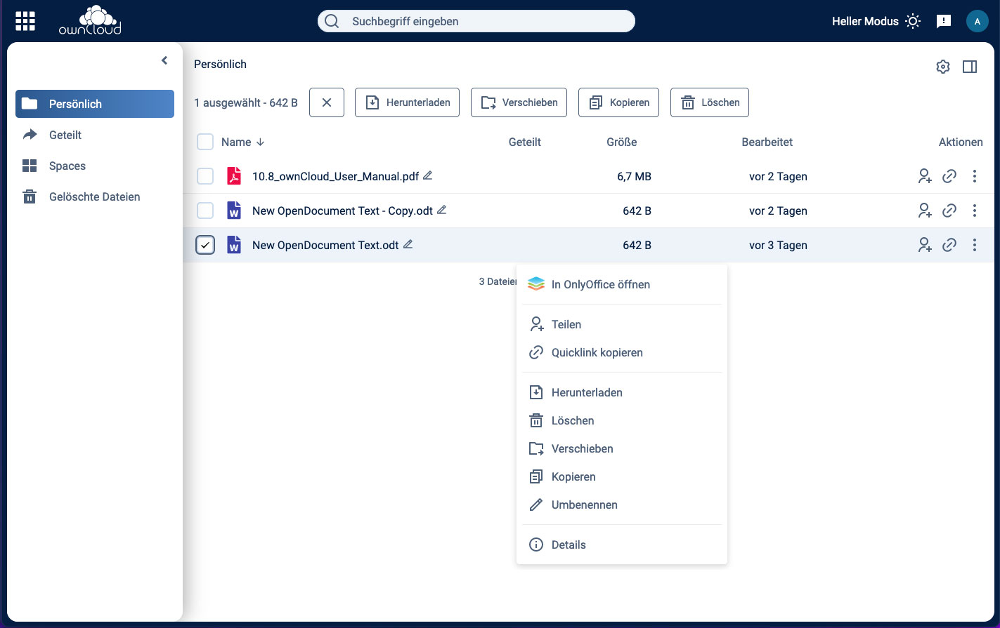
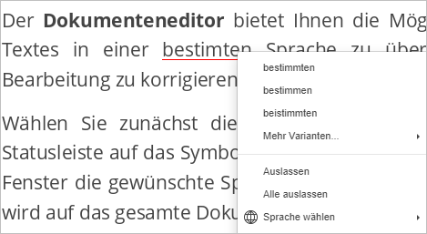
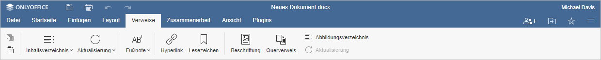
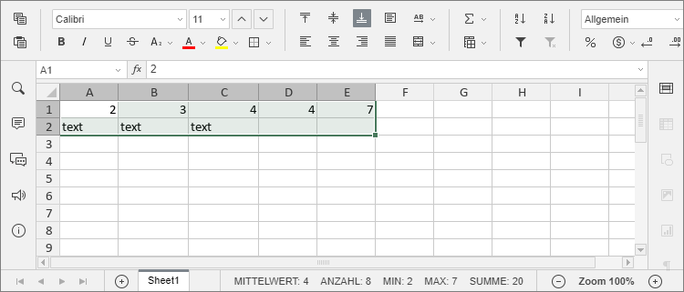

Willkommen
ownCloud - Einfaches, sicheres Filesharing

ownCloud ist die marktführende Open-Source-Software für Dateisynchronisation, -freigabe und Content Collaboration, mit der Teams von jedem Ort und auf jedem Gerät problemlos an Daten arbeiten können - so entsteht der digitale Arbeitsplatz der Zukunft.
Konsequent auf offenen Standards und Modularität basierend, eignet sich ownCloud als robuste und sicherheitsorientierte Dateiplattform sowohl für proprietäre als auch für Open-Source-Software-Umgebungen. OwnCloud bietet eine souveräne Dateiablage mit modernen, effizienten Produktivitätswerkzeugen bei gleichzeitig revisionssicherem Quellcode und umfassenden Freigabefunktionen.
ownCloud fügt sich nahtlos in jeden Arbeitsbereich ein, von Benutzerverzeichnissen über Sicherheitssysteme bis hin zu Monitoring- und Backup-Diensten - damit sensible Daten jederzeit unter Kontrolle bleiben. ownCloud ist so konzipiert, dass es individualisiert, gebrandet und auf die Bedürfnisse des Nutzers angepasst werden kann.
Die wichtigsten Funktionen von ownCloud auf einen Blick:
- Full digital workplace
- Wahlmöglichkeit zwischen On-Premises-, Hybrid- und Cloud-Speicher
- Hochsichere, verschlüsselte Content-Collaboration
- Sicheres Filesharing und Synchronisation
- Multiplattform auf allen Geräten
- Datenschutzkonform
- Erweiterbar & individualisierbar
- Nahtlose Integration für souveräne und proprietäre Arbeitsplätze
Weiterführende Informationen, wie ownCloud die Digitalisierung im öffentlichen Sektor mit vorantreibt erhalten Sie unter owncloud.com/de/digitalisierung-des-oeffentlichen-sektors
Geschichte
ownCloud wurde 2010 als Open-Source Projekt für File sync & Sharing gegründet und konstituierte sich 2011 als Unternehmen, um Unternehmen und Organisationen unterstützen zu können. Im Jahr 2012 wurde unser erster Kunde gewonnen. Als Open-Source Alternative zu Diensten wie Dropbox wurde ownCloud schnell zu einem der beliebtesten Open-Source Projekte weltweit mit über 1000 Beitragenden aus der Community. Im Jahr 2014 erhielt ownCloud eine Finanzierungsrunde von 6,3 Millionen Dollar und erreichte erstmals 1 Million Nutzer. 2016 verließ Frank Karlitschek, einer der Mitgründer, das Unternehmen, um einen eigenen Fork der ownCloud Platform aufzubauen.
Unter der neuen Führung durch CEO Tobias Gerlinger und Mitgründer sowie COO Holger Dyroff, schärfte die ownCloud GmbH in Nürnberg daraufhin den Fokus darauf, die stabilste, zuverlässigste und sicherste Open-Source Plattform für den digitalen Arbeitsplatz, Content Collaboration und sicheres File Sharing zu werden. Unser Angebot: Professionelle Unterstützung für Projekte der Größenordnung und Komplexität!
Unser Team hat es sich zur Aufgabe gemacht, Open-Source Technologie für anspruchsvolle Unternehmensumgebungen und wissenschaftliche Bedürfnisse bereitzustellen – nicht etwa trotz unserer Open-Source Überzeugung, sondern gerade deshalb! So konnten wir unseren Plattformkern kontinuierlich weiterentwickeln, neue Features und Integrationen hinzufügen sowie unsere Enterprise Edition noch performanter machen.
Im Jahr 2018 wurde ownCloud im Gartner Magic Quadrant for Content Collaboration Platforms (CCP) als einzige Open-Source Lösung weltweit gelistet.
2019 etablierten wir mit ownCloud.online unser erstes SaaS-Angebot, das perfekt auf die Bedürfnisse von kleinen und mittleren Unternehmen abgestimmt ist.
Heute arbeiten rund 75 Mitarbeitende zumeist remote für ownCloud und entwickeln unsere marktführende Plattform weiter. Wir ermögliche es Unternehmen, Bildungseinrichtungen, Organisationen und öffentlichen Institutionen einfach und sicher Dateien zu teilen, gemeinsam daran zu arbeiten und einen datensouveränen digitalen Arbeitsplatz zu etablieren – egal wo und unabhängig von der Wahl des Endgeräts. Über 500 Kunden und rund 200 Millionen User weltweit nutzen bereits ownCloud als Alternative zu Public Clouds und entscheiden sich damit für mehr digitale Souveränität, Sicherheit und Datenschutz.
Clients
ownCloud bietet seinen Nutzern mehrere Möglichkeiten auf Ihre Dateien zuzugreifen. Im Folgenden sollen diese kurz vorgestellt werden.
Web
ownCloud Web ist die meist genutzte Oberfläche für den Zugriff auf Ihre Daten. Sie lässt sich über jeden modernen Browser bedienen, bietet eine moderne Userexperience und umfassende Funktionen zum Teilen und Bearbeiten von Dateien und Ordnern. Zudem ist in der Weboberfläche ein komplettes WebOffice-Paket enthalten, mit dem Sie Dokumente, Kalkulationstabellen und Präsentationen direkt im Browser erstellen und bearbeiten können.
Wie Sie sich für die verifizierende Teststellung im Web-Client anmelden können erfahren Sie im Kapitel Erste Schritte.
Eine vollständige Dokumentation und weiterführende Informationen zum Web-Client finden Sie hier (momentan nur englischsprachig verfügbar).
Desktop
Der Desktop-Sync-Client sorgt im Hintergrund dafür, dass Ihre lokale Kopien Ihrer Dateien immer auf dem aktuellsten Stand sind. Die kontinuierliche Synchronisierung mit Ihrem Datei-Cloud-Server sorgt für eine einfache Nutzung in Kombination mit einer umfassenden Zugriffskontrolle. Sie können auf Dateien und Ordner in ownCloud lokal zugreifen, diese freigeben, bearbeiten und offline verfügbar machen.
Die Desktop-App integriert sich nahtlos in die nativen Dateimanager von Windows, macOS und Linux. Dateien können nahtlos in lokaler Software geöffnet und schnell über das ownCloud-Kontextmenü geteilt werden, egal ob Sie im Explorer, Finder, Nautilus oder Dolphin arbeiten. Es ermöglicht das Kopieren eines öffentlichen Links in die Zwischenablage, das Kopieren eines privaten Links in die Zwischenablage, das Öffnen des Freigabedialogs für spezifischere Anforderungen, das Öffnen im Browser oder das Anzeigen des Versionsverlaufs im Browser.
Das integrierte virtuelle Dateisystem verbessert die Benutzerfreundlichkeit und verringert den lokalen Speicherbedarf. Wenn es aktiviert ist, wird lediglich eine Platzhalter-Datei anstelle der vollständigen Datei synchronisiert, wobei die echte Datei nur bei Bedarf heruntergeladen wird, z. B. um ein Dokument in einer Anwendung zu öffnen. Benutzer können virtuelle Dateien in ihrem Dateimanager freigeben, auch wenn sie nicht lokal gespeichert sind. Weiterführende Informationen über das ownCloud Virtual File System (VFS) finden Sie hier.
Wie Sie den Desktop-Client für die verifizierende Teststellung einrichten und nutzen können erfahren Sie im Kapitel Erste Schritte.
Die offizielle, vollständige Dokumentation des Desktop-Clients (aktuell nur auf englisch verfügbar) finden Sie hier.
Mobile (iOS & Android)

ownCloud bietet ebenfalls Apps für iOS und Android und stellt so eine einfache Möglichkeit zur Verfügung schnell und unkompliziert von unterwegs auf Ihre Daten zuzugreifen. Einige Fuktionen der Apps sind:
- Bestens integriert: Dank der Dokumentenanbieter-Integration in Android und der Share Sheet- und Files- App-Integration in iOS können Sie mit ownCloud-Apps Dateien in Ihren bevorzugten Anwendungen nahtlos bearbeiten.
- Offline Bandbreite einsparen: Stellen Sie Dateien und Ordner selektiv offline zur Verfügung, so dass Sie auch offline darauf zugreifen können. Praktisch für Flugreisen, in abgelegenen Gebieten und zum Einsparen von Bandbreite.
- Entsperren mit nur einem Lächeln: Sowohl die Android- als auch die iOS-App unterstützen biometrische Sperren mittels FaceID und/oder TouchID, sodass Ihre Daten besonders sicher sind.
- Auf Sie zugeschnitten: Die ownCloud-Apps lassen sich jederzeit an Ihre Ihre Corporate Identity anpassen. Zudem lassen sich ebenfalls individuelle Einstellungen für Ihre Benutzer setzen.
- Mehrere Konten: Verbinden Sie sich mit mehreren ownCloud-Konten mit nur einer mobilen App, um auf alle Ihre Daten zuzugreifen
Wie Sie die mobile Apps für die verifizierende Teststellung einrichten und nutzen können erfahren Sie im Kapitel Erste Schritte.
Die offizielle, vollständige Dokumentation für die Mobile Clients (aktuell nur auf englisch verfügbar) finden Sie hier für iOS und hier für Android.
Accounts
Für die verifizierende Teststellung sind 30 Testaccounts gefordert. Diese Accounts sind im Folgenden aufgelistet mit Benutzername und Passwort.
Eine Anleitung zur Anmeldung und der ersten Schritte finden Sie im Kapitel Erste Schritte.
Admin Accounts
| Nutzername | Password |
|---|---|
| Admin 1 |
password1 |
| Admin 1 | password1 |
| Admin 1 | password1 |
| Admin 1 | password1 |
| Admin 1 | password1 |
Accountliste
| Nutzername | Password |
|---|---|
| User 1 | password1 |
Erste Schritte
In diesem Kapitel erklären wir Ihnen die grundsätzlichen Schritte, wie Sie ownCloud einrichten. Hierbei gehen wir auch auf die Einrichtung der Clients ein.
Web-Client
Der einfachste und deshalb meistgenutzte Weg, ownCloud zu benutzen ist der Web-Client. Diesen rufen Sie einfach wie von anderen, modernen Softwarelösungen gewohnt, in Ihrem bevorzugten Browser auf. Die URL, unter der Sie ownCloud für die verifizierende Teststellung erreichen lautet:
Der Web-Client ist für alle modernen Browser optimiert und voll funktional.
Login
Nach dem Aufrufen der URL wird Ihnen die Anmeldemaske angezeigt.
Hier können Sie sich mit den in Kapitel 4: Accounts gelisteten Accounts anmelden. Tragen Sie dazu den Benutzernamen und das Passwort in die dafür vorgesehenen Felder ein und klicken Sie auf "Anmelden".
Sie befinen sich nun in der Standardansicht.
Diese gliedert sich wie folgt (die Nummerierung bezieht sich auf die roten Kreise im Bild):
-
Linke Sidebar: Hier finden Sie Navigationselemente, die Sie schnell auf Ihre persönlichen Bereiche bringen:
- Persönlich: Dies ist Ihr eigener, persönlicher Speicherbereich, auf den nur Sie Zugriff haben.
- Geteilt: Hier finden Sie einen Überblick über Resourcen, die Sie mit anderen geteilt oder anderen mit Ihnen geteilt haben.
- Spaces: Hier finden Sie alle Spaces, auf die Sie Zugriff haben. Was genau Spaces sind und warum diese ownCloud so einzigartig machen erklärt Produktmanager Patrick Maier in diesem Blogbeitrag (englisch): Spaces: A Quantum Leap for Enterprise Collaboration.
- Gelöschte Dateien: Ein Papierkorb, der gelöschte Dateien zur Wiederherstellung bereithält.
-
Dateilliste: Das wohl wichtigste Element. Hier werden alle Dateien und Ordner des aktuellen Verzeichnisses angezeigt. Jede Datei und jeder Ordner bietet unterschiedliche Aktionen, die entweder über das Kontextmenü (= Rechtsklick) oder über die Aktionsicons am rechten Rand der jeweiligen Zeile aufgerufen werden können.
-
Rechte Sidebar: Hier finden Sie spezifische Informationen und Aktionsmöglichkeiten zur ausgewählten Datei oder Ordner. Die rechte Sidebar lässt sich über das
 Icon ein- und ausblenden.
Icon ein- und ausblenden. -
Top Naviagtion: Hier finden Sie statische Elemente, die unabhängig vom unteren Bereich immer sichtbar sind. Von links nach rechts:
- App-Switcher: Hier können Sie zwischen verschiedenen Apps wechseln - sofern welche installiert sind. In dieser Teststellung ist keine Erweiterung installiert.
- Logo: Dies kann individuell auf Ihre Bedürfnisse angepasst werden und ist den Benutzern eine gute Orientierungshilfe. Mit Klick auf das Logo gelangen Sie stets in Ihren persönlichen Speicherbereich.
- Suchfeld: Hier können Sie nach Dateien und Ordnern suchen. Die Suche ist ein sehr mächtiges Tool und umfasst u.a. eine Volltextsuche und Suche nach Tags. Geben Sie hierzu einfach Ihren gewünschten Suchbegriff ein. Es werden Ihnen direkt Vorschläge gemacht und mit Drücken der Enter-Taste gelangen Sie auf eine umfassende Suchergebnis-Seite.
- Light/Dark Mode: Wechseln Sie das Layout des Web-Clients in den hellen oder dunklen Modus. Abhängig von der Tageszeit ist die jeweilige Farbgebung angenehmer für Ihre Augen.
- Initialen: Hier finden Sie Informationen zum aktuell angemeldeten Benutzer, die Einstellungen, können Sich vom Web-Client abmelden und eine Anzeige über die aktuelle Nutzung Ihres Speicherbereichs.
Eine vollständige Dokumentation der Weboberfläche und weiterführende Informationen finden Sie hier (momentan nur auf englisch verfügbar).
Desktop Client
Der Desktop Client ist die Schnittstelle zwischen Ihrem PC/Laptop und dem Cloud-Server, auf dem ihre Dateien gespeichert sind. Er dient dazu, Ihnen lokal alle Dateien und Ordner zur Verfügung zu stellen, z.B. für den Offline-Gebrauch. Der Desktop-Client stellt sicher, das Ihre lokalen Dateien und die auf Ihrem Server stets synchornisiert bleiben - Änderungen werden bei vorhandener Internetverbindung sofort weitergegeben. Und das alles ohne, dass Sie sich aktiv darum kümmern müssen.
Download
ownCloud stellt für alle gängigen Betriebssysteme entsprechende Desktop-Clients zur Verfügung. Sie können sich diesen hier herunterladen:
| Betriebssystem | Downloadlink | Systemvoraussetzungen |
|---|---|---|
| Mac | https://download.owncloud.com/desktop/testpilotcloud/daily/3.0/ | 64bit Mac OS X 10.12+ |
| Windows | https://download.owncloud.com/desktop/testpilotcloud/daily/3.0/ | 64bit, 32bit version |
| Linux | https://download.owncloud.com/desktop/ownCloud/stable/latest/linux/download/ | - |
Einrichtung
Nach der Installation starten Sie das Programm. Sie werden beim ersten Start nach der Serveradresse gefragt.

Geben Sie hier die URL der verifizierenden Teststellung ein:
Klicken Sie rechts unten auf "Weiter"
Monitoring
Service Desk
FAQ
Anforderungen
| A/B | Lfd. Nr. | Nr. aus LB | Dringlichkeit | Priorität |
|---|---|---|---|---|
| A | A-NF-02 | BER-01 | Muss | n/a |
Anforderung
Stellen Sie das System bereits in der verifizierenden Teststellung als Software-as-a-Service dem AG zur Verfügung?
Antwort
Die verifiziernde Teststellung wird als Software-as-a-Service zur Verfügung gestellt. Wie Sie darauf zugreifen können erfahren Sie im Kapitel Erste Schritte
| A/B | Lfd. Nr. | Nr. aus LB | Dringlichkeit | Priorität |
|---|---|---|---|---|
| A | A-CS-01 | CS-1.02 | Muss | n/a |
Anforderung
Stellen Sie für den Cloud Speicher einen Sync-Client für die PC-Betriebssysteme Windows und macOS in der jeweils aktuellen Betriebssystemversion zur Verfügung?
Antwort
Ja, ownCloud stellt für alle gängigen Betriebssysteme (Windows, MacO, Linux) Sync-Clients zur Verfügung. Diese werden regelmäßig aktualisiert. Weitere Informationen zur Einrichtung und Nutzung finden Sie unter Clients
| A/B | Lfd. Nr. | Nr. aus LB | Dringlichkeit | Priorität |
|---|---|---|---|---|
| A | A-CS-02 | CS-1.03 | n/a |
Anforderung
Stellen Sie für den Cloud Speicher eine Mobile-App für die Mobil-Betriebssysteme iOS, iPadOS und Android in der jeweils aktuellen Betriebssystemversion zur Verfügung?
Antwort
Ja, ownCloud stellt für alle gängigen mobilen Betriebssysteme (iOS, iPadOS, Android) Apps zur Verfügung. Diese werden regelmäßig aktualisiert. Weitere Informationen zur Einrichtung und Nutzung finden Sie unter Clients.
| A/B | Lfd. Nr. | Nr. aus LB | Dringlichkeit | Priorität |
|---|---|---|---|---|
| B | EG-CS-05 | CS-1.05 | SOLL | II |
Anforderung
Stellen Sie für den Cloud Speicher einen Sync- Client für AMD64-Debian basierte PC- Betriebssysteme einschließlich Ubuntu in der aktuellen Betriebssystemversion (Debian-Paket für Debian Stable und Ubuntu LTS) zur Verfügung?
Antwort
Ja. Weitere Informationen zur Einrichtung und Nutzung finden Sie unter Clients.
| A/B | Lfd. Nr. | Nr. aus LB | Dringlichkeit | Priorität |
|---|---|---|---|---|
| B | EG-CS-11 | CS-1.08 | SOLL | III |
Anforderung
Stellen Sie einen Sync-Client zur Verfügung, der einen Ad-hoc-Zugriff auf die Dateien im Cloud Speicher ermöglicht?
Antwort
Ja. Sowohl der Desktop-Sync-Client als auch die mobile Apps erlauben einen direkten Zugriff auf Ihre Dateien.
Desktop-Client: Öffnen Sie im Datei-Explorer Ihres Betriebssystems den Ordner, den Sie bei der Einrichtung als Sync-Ordner angegeben haben. Hier stehen Ihnen alle synchronisierten Dateien zur Verfügung.
Mobile-Clients (iOS/Android): Die App zeigt Ihnen Ihren gesamten Speicherbereich an. Tappen Sie auf eine Datei um diese zu öffnen.
Weitere Informationen zur Einrichtung und Nutzung finden Sie unter Clients.
| A/B | Lfd. Nr. | Nr. aus LB | Dringlichkeit | Priorität |
|---|---|---|---|---|
| B | EG-CS-12 | CS-1.09 | SOLL | II |
Anforderung
Stellen Sie einen Sync-Client zur Verfügung, der wahlweise anstelle des in CS-1.08 beschriebenen Synchronisationsmodus alle Inhalte der zur Synchronisation ausgewählten Verzeichnisse des Cloud Speichers auf den PC des Nutzers spiegelt, offline verfügbar macht und bei lokalen Änderungen diese Dateien zurück in den Cloud Speicher synchronisiert
Antwort
Ja. Sowohl über den Desktop-Client als auch die mobile Clients können Dateien lokal offline verfügbar gemacht werden. Weitere Informationen finen Sie im Kapitel EG-CS-14 oder unter Clients.
| A/B | Lfd. Nr. | Nr. aus LB | Dringlichkeit | Priorität |
|---|---|---|---|---|
| B | EG-CS-14 | CS-1.13 | Soll | I |
Anforderung
Bieten Sie dem Nutzer die Option, einzelne Dateien oder Verzeichnisse (inkl. Unterverzeichnisse) im Sync-Client bzw. der Mobile-App auszuwählen, die dadurch auf dem Endgerät des Nutzers offline verfügbar werden?
Antwort
Ja. Sowohl bei der initialen Einrichtung des Benutzers als auch im Nachhinein lassen sich einzelne Order auswählen, die offline verfügbar gemacht werden sollen.
Desktop-Client
Öffnen Sie dazu zunächst den Client indem Sie auf das ownCloud-Symbol in Ihrer Statusleiste klicken und wählen Sie "Einstellungen"

Im zweiten Reiter (Accountname) sehen Sie nun die Ordner, die zur Synchronisation ausgewählt sind. Sie können nun neue Order hinzufügen oder bestehende abwählen. Abgewählte Ordner werden automatisch von Ihrem lokalen Gerät gelöscht, beliben aber natürlich in der Cloud bestehen.

Mobile Client
In den mobile Clients können Sie wie folgt Ordner offline verfügbar machen.
| A/B | Lfd. Nr. | Nr. aus LB | Dringlichkeit | Priorität |
|---|---|---|---|---|
| A | A-CS-03 | CS-1.14 | Muss | n/a |
Anforderung
Integrieren Sie den Cloud Speicher sowohl über die Mobile- App als auch den Sync-Client so in das jeweilige Betriebs- system, dass auch andere Apps bzw. Programme auf Ordner und Dateien des Speicherbereichs lesend und schreibend zugreifen können?
Antwort
Ordner, die im Client zur Synchronisation ausgwählt sind integrieren sich nahtlos in Ihr lokales Filesystem.
Desktop-Client:
Öffnen Sie den während der Einrichtung angegebenen Synchronisations-Ordner in Ihrem Datei-Explorer. Hier finden Sie alle Dateien und Ordner, die mit Ihrem Cloud-Server synchronisiert werden.

Mobile Clients (iOS/ Android)
Dank der nativen Integration steht Ihnen Ihr ownCloud-Account als Speicherort für Dateien in den meisten modernen Apps zur Vefügung.

| A/B | Lfd. Nr. | Nr. aus LB | Dringlichkeit | Priorität |
|---|---|---|---|---|
| B | EG-CS-15 | CS-1.17 | Soll | I |
Anforderung
Bieten Sie dem Nutzer die Möglichkeit, Dateien aus dem Sync-Client heraus im WebOffice zu öffnen?
Antwort
| A/B | Lfd. Nr. | Nr. aus LB | Dringlichkeit | Priorität |
|---|---|---|---|---|
| A | A-CS-04 | CS-2.01 | Muss | n/a |
Anforderung
Integrieren Sie in den Cloud Speicher ein Rollen- und Rechtekonzept in dem Nutzern, Nutzerrollen und Nutzer- gruppen Berechtigungen zugewiesen werden können, um bestimmte Aktionen (Öffnen, Anlegen, Bearbeiten, Löschen und Freigeben von Dateien und Verzeichnissen, sowie Nutzer bzw. Nutzergruppen im Cloud Speicher verwalten) durchführen zu können? Eine Anbindung an das mebis IDM des AGs ist während der verifizierenden Teststellung nicht erforderlich.
Antwort
Ja, ownCloud verfügt über weitreichende Möglichkeiten zur Festlegung von Rechten und kann auf Benutzer-, Gruppen-, Order-, und Dateiebene erfolgen.
Klicken Sie hierzu auf das Share Icon  einer Datei oder Ordner.
einer Datei oder Ordner.
In der sich nun öffnenden rechten Sidebar können Sie nun angeben, mit welchen Benutzern oder Benutzergruppen und welchen Berechtigungen Sie die Daten oder den Ordner teilen möchten.


Die Verwaltung von Nutzergruppen obliegt dem Systemadministrator.
| A/B | Lfd. Nr. | Nr. aus LB | Dringlichkeit | Priorität |
|---|---|---|---|---|
| B | EG-CS-16 | CS-2.02 | Muss | I |
Anforderung
Ermöglichen Sie dem Administrator der Einrichtung sowie dem einrichtungsübergreifenden Konfigurator die freie Konfiguration der Quota bis zu 100 GB pro Nutzer, Nutzerrolle und Nutzergruppe?
Antwort
Ja, jedem Nutzer und jeder Gruppe können individuelle Quotas zugewiesen werden. Dies erfordert Administratorrechte und kann nur über die Serverkonfiguration gesetzt werden.
| A/B | Lfd. Nr. | Nr. aus LB | Dringlichkeit | Priorität |
|---|---|---|---|---|
| A | A-CS-05 | CS-3.04 | Muss | n/a |
Anforderung
Bieten Sie berechtigten Nutzern die Möglichkeit, Verzeichnisse und Dateien aus dem persönlichen Speicherbereich für Nutzer oder Nutzergruppen der eigenen Einrichtung freizugeben bzw. zu teilen, mit den vergebbaren Berechtigungen: „Anzeigen“, „Bearbeiten“, „Erstellen“, „Löschen“ und „Weiterteilen“?
Antwort
Ja. ownCloud bietet weitreichende Möglichkeiten zum Setzen von Berechtigungen. Diese können sowohl Rollen,- Gruppen- als auch Ordern- und Dateibasiert festgelegt werden.
Klicken Sie dazu auf das Share-Icon  einer Datei oder Ordner oder öffnen Sie mit einem Rechtsklick darauf das Kontext-Menü und wählen Sie "Teilen".
einer Datei oder Ordner oder öffnen Sie mit einem Rechtsklick darauf das Kontext-Menü und wählen Sie "Teilen".

In der sich nun öffnenden rechten Sidebar finden Sie alle Optionen zum setzen von Berechtigungen von Freigaben. Mit Klick auf "Als Betrachter einladen" öffnet sich ein Detailfenster, in dem Sie individuelle Berechtigungen festlegen können.
| A/B | Lfd. Nr. | Nr. aus LB | Dringlichkeit | Priorität |
|---|---|---|---|---|
| A | A-CS-06 | CS-3.05 | Muss | n/a |
Anforderung
Bieten Sie berechtigten Nutzern die Möglichkeit, Verzeichnisse und Dateien der eigenen Einrichtung aus ihrem persönlichen Speicherbereich z. B. über einen Freigabelink für Nutzer auch anderer Einrichtungen und für Gastnutzer freizugeben bzw. zu teilen, mit den vergebbaren Berechtigungen: „Anzeigen“, „Bearbeiten“, „Erstellen“, „Löschen“ und „Weiterteilen“?
Antwort
Ja. Siehe Kapitel A-CS-05.
| A/B | Lfd. Nr. | Nr. aus LB | Dringlichkeit | Priorität |
|---|---|---|---|---|
| B | EG-CS-21 | CS-3.06 | Soll | I |
Anforderung
Bieten Sie berechtigten Nutzern die Möglichkeit, Freigaben mit einem Passwortschutz zu versehen?
Antwort
Ja. Klicken Sie dazu auf das Share-Icon  einer Datei oder Ordner oder öffnen Sie mit einem Rechtsklick darauf das Kontext-Menü und wählen Sie "Teilen".
einer Datei oder Ordner oder öffnen Sie mit einem Rechtsklick darauf das Kontext-Menü und wählen Sie "Teilen".
Klicken Sie in der sich nun öffnenden rechten Sidebar im Abschnitt "Per Link teilen" auf "Link erzeugen". Mit Klick auf das Menü-Icon  finden Sie die Möglichkeit, einen Passwortschutz für diese Freigabe zu setzen.
finden Sie die Möglichkeit, einen Passwortschutz für diese Freigabe zu setzen.

Hinweis: Im Abschnitt "Mit anderen Teilen" steht diese Funktion nicht zur Verfügung. Hier können Sie Dateien und Ordner mit Benutzern freigeben, die bereits in ownCloud registriert sind und Benutzerzugangsdaten haben. Ein Passwortschutz ist bei diesen Benutzern nicht anwendbar.
| A/B | Lfd. Nr. | Nr. aus LB | Dringlichkeit | Priorität |
|---|---|---|---|---|
| B | EG-CS-22 | CS-3.08 | Soll | I |
Anforderung
Bieten Sie berechtigten Nutzern die Möglichkeit, ein Ablaufdatum oder eine Ablauffrist von Freigaben einzustellen, an dem die Freigabe automatisch erlischt?
Antwort
Ja. Klicken Sie dazu auf das Share-Icon  einer Datei oder Ordner oder öffnen Sie mit einem Rechtsklick darauf das Kontext-Menü und wählen Sie "Teilen".
einer Datei oder Ordner oder öffnen Sie mit einem Rechtsklick darauf das Kontext-Menü und wählen Sie "Teilen".
Klicken Sie in der sich nun öffnenden rechten Sidebar im Abschnitt "Per Link teilen" auf "Link erzeugen". Mit Klick auf das Menü-Icon  finden Sie die Möglichkeit, ein Ablaufdatum für diese Freigabe zu setzen.
finden Sie die Möglichkeit, ein Ablaufdatum für diese Freigabe zu setzen.
Hinweis: Im Abschnitt "Mit anderen Teilen" steht diese Funktion nicht zur Verfügung. Hier können Sie Dateien und Ordner mit Benutzern freigeben, die bereits in ownCloud registriert sind und Benutzerzugangsdaten haben. Ein Ablaufdatum für Freigaben mit diesen Benutzern ist nicht anwendbar.
| A/B | Lfd. Nr. | Nr. aus LB | Dringlichkeit | Priorität |
|---|---|---|---|---|
| A | A-CS-07 | CS-5.02 | Muss | n/a |
Anforderung
Stellen Sie einen integrierten und zeitlich konfigurierbaren Virenscanner für On-Demand und On-Access-Scans zur Verfügung?
Antwort
ownCloud integriert standardmäßig ClamAV als Anti-Viren-Lösung. Hierbei wird jeder Upload auf Schadsoftware überprüft und im Zweifeslfall geblockt.
Ein On-Demand-Virenscan steht den normalen Usern nicht zur Verfügung. Dies kann lediglich von Administratoren gestartet werden.
Ein Virenscan On-Access existiert nicht, da vorgeschaltete Mechanismen die Sicherheit gewähren und die Zugriffszeit dadurch erheblich beeinträchtigt werden würde.
| A/B | Lfd. Nr. | Nr. aus LB | Dringlichkeit | Priorität |
|---|---|---|---|---|
| B | EG-CS-33 | CS-5.06 | Soll | I |
Anforderung
Konfigurieren Sie den Virenscanner im Cloud Speicher so, dass bereits der Upload einer verdächtigen Datei unterbunden wird und der Nutzer entsprechend informiert wird?
Antwort
Ja, jede Datei wird während des Uploads auf eventuelle Schadsoftware geprüft. Sollte Schadsoftware gefunden werden wird die Datei blockiert und der Benutzer per E-Mail darüber informiert.
| A/B | Lfd. Nr. | Nr. aus LB | Dringlichkeit | Priorität |
|---|---|---|---|---|
| B | EG-CS-34 | CS-5.08 | Soll | I |
Anforderung
Unterstützt der Web-Client Ihres Cloud Speichers die Anzeige eines Kontextmenüs mit zulässigen Datei- und Verzeichnisoperationen per Rechtsklick?
Antwort
Ja. Um das Kontextmenü zu öffnen klicken Sie mit der rechten Maustaste auf einen Ordern oder eine Datei.
| A/B | Lfd. Nr. | Nr. aus LB | Dringlichkeit | Priorität |
|---|---|---|---|---|
| B | EG-CS-35 | CS-5.08 | Soll | II |
Anforderung
Unterstützt der Web-Client Ihres Cloud Speichers die Anzeige eines Vorschaubildes von Standard- Bildformaten (mindestens jpg, tif, png, bmp) sowohl als Thumbnail als auch in einer größeren Ansicht?
Antwort
Ja. Eine Vorschau wird sowohl als Thumbnail in der Dateiliste als auch in der rechten Sidebar angezeigt. Laden Sie hierzu ein beliebiges Bild hoch. Die Vorschaubilder werden automatisch erstellt und angezeigt.
| A/B | Lfd. Nr. | Nr. aus LB | Dringlichkeit | Priorität |
|---|---|---|---|---|
| B | EG-CS-36 | CS-5.08 | Soll | I |
Anforderung
Unterstützt der Web-Client Ihres Cloud Speichers Drag & Drop von Dateien und Verzeichnissen innerhalb des Web-Clients?
Antwort
Ja. Klicken und halten Sie die Maustatste gedrückt und ziehen Sie die gewünschte Datei oder Ordner an den neuen Zielort.
| A/B | Lfd. Nr. | Nr. aus LB | Dringlichkeit | Priorität |
|---|---|---|---|---|
| B | EG-CS-37 | CS-5.08 | Soll | I |
Anforderung
Unterstützt der Web-Client Ihres Cloud Speichers Drag & Drop von Dateien und Verzeichnissen zwischen dem Web-Client und dem PC- Betriebssystem?
Antwort
Das Hochladen von Dateien und Ordnern per Drag&Drop ist problemlos möglich.
Das Herunterladen von Dateien und Ordnern ist auf Grund von Sicherheitsbeschränkungen seitens Betriebssystem und Browser nicht möglich.
| A/B | Lfd. Nr. | Nr. aus LB | Dringlichkeit | Priorität |
|---|---|---|---|---|
| B | EG-CS-38 | CS-5.08 | Soll | II |
Anforderung
Unterstützt der Web-Client Ihres Cloud Speichers mindestens die Windows Tastaturkürzel Strg+C / Strg+V / Strg+X für Kopieren / Vervielfältigen / Ausschneiden von Dateien und Verzeichnissen?
Antwort
Ja. Markieren Sie dazu eine oder mehrere Dateien oder Ordner indem Sie in der Dateiliste auf der linken Seite die Häkchen setzen. Mit den entsprechenden Tastenkombinationen lassen sich diese jetzt Kopieren, Ausschneiden und Einfügen.
Tip: Mit gedrückter Shift bzw. Strg-Taste während Sie Dateien anklicken können Sie mehrere Dateien gleichzeitig auswählen.
| A/B | Lfd. Nr. | Nr. aus LB | Dringlichkeit | Priorität |
|---|---|---|---|---|
| B | EG-CS-39 | CS-5.08 | Soll | II |
Anforderung
Unterstützt der Web-Client Ihres Cloud Speichers mindestens die MacOS Tastaturkürzel Cmd+C / Cmd+V / Cmd+X für Kopieren / Vervielfältigen / Ausschneiden von Dateien und Verzeichnissen?
Antwort
Ja. Markieren Sie dazu eine oder mehrere Dateien oder Ordner indem Sie in der Dateiliste auf der linken Seite die Häkchen setzen. Mit den entsprechenden Tastenkombinationen lassen sich diese jetzt Kopieren, Ausschneiden und Einfügen.
Tip: Mit gedrückter Shift bzw. Cmd-Taste während Sie Dateien anklicken können Sie mehrere Dateien gleichzeitig auswählen.
| A/B | Lfd. Nr. | Nr. aus LB | Dringlichkeit | Priorität |
|---|---|---|---|---|
| B | EG-CS-40 | CS-5.09 | Soll | I |
Anforderung
Ermöglicht der Web-Client Ihres Cloud Speichers das Abspielen der im Cloud Speicher abgelegten Audio- und Videodateien (mindestens die Formate mp3 und avi sowie mp4 mindestens auf Basis des Videocodecs H.264) ohne zusätzliche Software?
Antwort
Ja. Entsprechende Dateien können direkt im Web-Client wiedergegeben werden. Klicken Sie auf den Dateinamen einer Videodatei um diese im Medienplayer wiederzugeben.
| A/B | Lfd. Nr. | Nr. aus LB | Dringlichkeit | Priorität |
|---|---|---|---|---|
| B | EG-CS-41 | CS-5.10 | Soll | II |
Anforderung
Ermöglicht der Web-Client Ihres Cloud Speichers die Anzeige der im Cloud Speicher abgelegten PDF-Dokumente ohne zusätzliche Software oder Browserplugins?
Antwort
Ja. ownCloud wird mit einem integrierten PDF-Anzeigemodul geliefert. Klicken Sie auf den Dateinamen einer PDF-Datei um die Datei anzeigen zu lassen.
| A/B | Lfd. Nr. | Nr. aus LB | Dringlichkeit | Priorität |
|---|---|---|---|---|
| B | EG-CS-46 | CS-5.14 | Soll | II |
Anforderung
Bieten Sie mindestens im Web-Client die Möglichkeit, sofern ein Nutzer Schreibberechtigung auf eine Datei besitzt, die Datei mit Schlagworten - pro Schlagwort jeweils bestehend aus einer vom Nutzer frei wählbaren Zeichenkette - zu versehen?
Antwort
Ja. Dateien können mit sog. "Tags" verschlagwortet werden. Benutzer können dabei aus vorhandenen Tags auswählen oder selbst Tags anlegen.
Klicken Sie dazu mit der rechten Maustaste auf eine Datei oder Ordner um das Kontextmenü zu öffnen und wählen Sie "Tags bearbeiten".
In der rechten Sidebar öffnet sich ein Textfeld. Hier können Sie nun aus vorhandenen Tags auswählen oder selbst Tags erstellen in dem Sie Text eingeben und mit "Enter" bestätigen. Klicken Sie dann zum Speichern unten auf den Button "Speichern".
Tip: Die hinzugefügten Tags werden in der Dateiliste neben dem Dateinamen angezeigt. Um nach Dateien mit einem bestimmten Tag zu suchen klicken Sie den entsprechenden Tag in der Dateiliste an. Es öffnet sich die Suchergebnisseite, die alle Dateien mit diesem Tag anzeigt.
| A/B | Lfd. Nr. | Nr. aus LB | Dringlichkeit | Priorität |
|---|---|---|---|---|
| A | A-CS-08 | CS-5.15 | Muss | n/a |
Anforderung
Bieten Sie den Nutzern die Möglichkeit, nach Dateinamen im gesamten vom Nutzer zugreifbaren Speicherbereich zu suchen?
Antwort
ownCloud verfügt über eine umfangreiche Suchfunktion. Diese errreichen Sie jederzeit über die Suchleiste oben in der Mitte. Gegben Sie Ihren Suchbegriff hier ein. Sämtliche Suchergebnisse werden Ihnen aufgeschlüsselt nach Typ und Speicherort angezeigt.
Die Suche umfasst dabei viele Attribute wie z.B.
- Dateinamen
- Ordnernamen
- Tags (s. EG-CS-46)
- Dateiinhalte (Volltextsuche)
| A/B | Lfd. Nr. | Nr. aus LB | Dringlichkeit | Priorität |
|---|---|---|---|---|
| B | EG-CS-47 | CS-5.16 | Soll | I |
Anforderung
Bieten Sie im Web-Client eine Volltextsuche im gesamten vom Nutzer zugreifbaren Speicherbereich mit Standardformaten (mindestens textbasierte PDF, Office-Dateien, Textdateien)?
Antwort
Ja. Weitere Ifnormationen tur Suchfunktion finden Sie im Kapitel A-CS-08.
| A/B | Lfd. Nr. | Nr. aus LB | Dringlichkeit | Priorität |
|---|---|---|---|---|
| B | EG-CS-50 | CS-5.18 | Soll | II |
Anforderung
Bieten Sie den Nutzern im Web-Client die Möglichkeit, nach Schlagworten zu suchen?
Antwort
Ja. Weitere Ifnormationen tur Suchfunktion finden Sie im Kapitel A-CS-08.
| A/B | Lfd. Nr. | Nr. aus LB | Dringlichkeit | Priorität |
|---|---|---|---|---|
| B | EG-CS-51 | CS-5.19 | Soll | I |
Anforderung
Bieten Sie dem berechtigten Nutzer mindestens im Web-Client eine Übersicht aller erteilten und erhaltenen Freigaben inklusive der Linkfreigaben?
Antwort
Ja. Im Bereich "Geteilt" in der linken Sidebar werden alle Resourcen aufgelistet, die dem Benutzer über Freigaben zugeteilt wurden und die der Benutzer anderen Personen freigegeben hat.

| A/B | Lfd. Nr. | Nr. aus LB | Dringlichkeit | Priorität |
|---|---|---|---|---|
| A | A-NF-01 | DOK-08 | MUSS | n/a |
Anforderung
Datenschutzanforderungen aus AVV Haben Sie in den AVV Anlagen
- Los 1: „Anlage_4.1_AVV Cloud Speicher und WebOffice“ bzw.
- Los 2: „Anlage_4.2_AVV Messenger“ die technischen und organisatorischen Maßnahmen und die Liste der Subunternehmer (weitere Auftragsverarbeiter) vollständig ausgefüllt, diese um weitere erforderliche Angaben in der AVV ergänzt und übermitteln sie den AVV spätestens im Rahmen des BAFO an den AG?
Antwort
| A/B | Lfd. Nr. | Nr. aus LB | Dringlichkeit | Priorität |
|---|---|---|---|---|
| A | A-NF-04 | KRY-02 KRY-03 | Muss | n/a |
Anforderung
Stellt Ihr System sicher, dass sämtliche Daten sicher verschlüsselt übertragen und die Anforderungen (siehe linke Spalte) hinsichtlich Speicherung erfüllt werden?
Antwort
Ja, sämtliche Daten, die zwischen Client und Server ausgetauscht werden, werden auf Basis der aktuellsten Verschlüsselungsmethoden und Sicherheitsmaßnahmen übertragen.
| A/B | Lfd. Nr. | Nr. aus LB | Dringlichkeit | Priorität |
|---|---|---|---|---|
| A | A-NF-03 | MUP-02 | Muss | n/a |
Anforderung
Stellen Sie bereits während der verifizierenden Teststellung ein Dashboard für Monitoring- und Protokollierungsdaten zur Verfügung, so dass der AG die links aufgeführten Anforderungen der Leistungsbeschreibung verifizieren kann?
Antwort
Ja. Weitere Informationen zum Monitoring finden Sie im Kapitel Monitoring.
| A/B | Lfd. Nr. | Nr. aus LB | Dringlichkeit | Priorität |
|---|---|---|---|---|
| A | A-F-01 | PNA-01 | Muss | n/a |
Anforderung
Betriebssysteme Können Sie mit dem angebotenen System im Rahmen der verifizierenden Teststellung die Erfüllung der A-Kriterien für die Nutzung mit folgenden Betriebssystemen nachweisen?
- Windows 10 (ab Version 2004) und nachfolgende Versionen von Windows, z. B. Windows 11
- macOS (ab Version 10.15)
- iOS und iPadOS (ab Version 14)
- Android (ab Version 8)
Antwort
ownCloud ist als SaaS-Lösung hauptsächlich browserbasiert und damit weitestgehend unabhängig von Betriebssystemen und deren Versionen. Ein kompatibler Browser genügt um ownCloud vollständig nutzen zu können.
Darüber hinaus bietet ownCloud für gängige Betriebssysteme Sync-Clients an (Android, iOS, Windwos, MacOS), die stets aktualisiert und erweitert werden. Nähere Informationen finden Sie im Kapitel Clients
| A/B | Lfd. Nr. | Nr. aus LB | Dringlichkeit | Priorität |
|---|---|---|---|---|
| A | A-WO-01 | WO-1.01 | MUSS | n/a |
Anforderung
Ermöglichen Sie aus dem Web-Client des Cloud Speichers heraus das Starten jedes der drei WebOffice-Module (Textverarbeitung, Tabellenkalkulation und Multimediapräsentation) durch Anklicken bzw. Antippen einer entsprechenden Datei, wobei das passende WebOffice-Modul hierbei vom System auf Basis der Dateiendung ausgewählt wird?
Antwort
Ja. Entsprechend des Dateityps wird das passende WebOffice-Modul gestartet.
| A/B | Lfd. Nr. | Nr. aus LB | Dringlichkeit | Priorität |
|---|---|---|---|---|
| B | EG-WO-01 | WO-1.02 | Soll | III |
Anforderung
Ermöglichen Sie aus einer Mobile-App des Cloud Speichers heraus das Starten jedes der drei WebOffice-Module (Textverarbeitung, Tabellenkalkulation und Multimediapräsentation) durch Öffnen einer Datei mit einem zum betreffenden WebOffice-Modul kompatiblen Dateiformat?
Antwort
| A/B | Lfd. Nr. | Nr. aus LB | Dringlichkeit | Priorität |
|---|---|---|---|---|
| A | A-WO-02 | WO-2.01 | Muss | n/a |
Anforderung
Wird innerhalb der WebOffice-Module das Importieren bzw. Öffnen der Dateitypen bzw. Dateiformate Office Open XML (docx, xlsx, pptx) und Legacy-MS-Office Dokumentenformate (doc, xls, ppt) unterstützt?
Antwort
Ja. Der unten stehenden Tabelle können Sie alle kompatiblen Dateiformate der jewiligen Editoren (Dokumente, Kalkulationstabellen, Präsentationen) entnehmen.
Unterstützte Formate für Dokumente
Die folgende Tabelle enthält die Formate, die zum Anzeigen und/oder zur Bearbeitung geöffnet werden können.
| Formate | Beschreibung | Nativ anzeigen | Anzeigen nach Konvertierung in OOXML | Nativ bearbeiten | Bearbeitung nach Konvertierung in OOXML |
|---|---|---|---|---|---|
| DjVu | Dateiformat, das hauptsächlich zum Speichern gescannter Dokumente entwickelt wurde, insbesondere solcher, die eine Kombination aus Text, Strichzeichnungen und Fotos enthalten. | - | ✅ | - | - |
| DOC | Dateierweiterung für Textverarbeitungsdokumente, die mit Microsoft Word erstellt werden. | - | ✅ | - | ✅ |
| DOCM | Macro-Enabled Microsoft Word Document Filename extension for Microsoft Word 2007 or higher generated documents with the ability to run macros |
- | ✅ | - | ✅ |
| DOCX | Office Open XML Gezipptes, XML-basiertes, von Microsoft entwickeltes Dateiformat zur Präsentation von Kalkulationstabellen, Diagrammen, Präsentationen und Textverarbeitungsdokumenten. |
✅ | - | ✅ | - |
| DOCXF | Ein Format zum Erstellen, Bearbeiten und Zusammenarbeiten an einer Formularvorlage. | ✅ | - | ✅ | - |
| DOTX | Word Open XML Dokumenten-Vorlage Gezipptes, XML-basiertes, von Microsoft für Dokumentenvorlagen entwickeltes Dateiformat. Eine DOTX-Vorlage enthält Formatierungseinstellungen, Stile usw. und kann zum Erstellen mehrerer Dokumente mit derselben Formatierung verwendet werden. |
- | ✅ | - | ✅ |
| EPUB | Electronic Publication Offener Standard für E-Books vom International Digital Publishing Forum. |
- | ✅ | - | ✅ |
| FB2 | Eine E-Book-Dateierweiterung, mit der Sie Bücher auf Ihrem Computer oder Mobilgerät lesen können. | - | ✅ | - | ✅ |
| HTML | HyperText Markup Language Hauptauszeichnungssprache für Webseiten. |
- | ✅ | - | ✅ |
| ODT | Textverarbeitungsformat von OpenDocument, ein offener Standard für elektronische Dokumente. | - | ✅ | - | ✅ |
| OFORM | Ein Format zum Ausfüllen eines Formulars. Formularfelder sind ausfüllbar, aber Benutzer können die Formatierung oder Parameter der Formularelemente nicht ändern*. | ✅ | - | ✅ | - |
| OTT | OpenDocument-Dokumentenvorlage OpenDocument-Dateiformat für Dokumentenvorlagen. Eine OTT-Vorlage enthält Formatierungseinstellungen, Stile usw. und kann zum Erstellen mehrerer Dokumente mit derselben Formatierung verwendet werden. |
- | ✅ | - | ✅ |
| Portable Document Format Dateiformat, mit dem Dokumente unabhängig vom ursprünglichen Anwendungsprogramm, Betriebssystem und der Hardware originalgetreu wiedergegeben werden können. |
- | ✅ | - | - | |
| PDF/A | Portable Document Format / A Eine ISO-standardisierte Version des Portable Document Format (PDF), die auf die Archivierung und Langzeitbewahrung elektronischer Dokumente spezialisiert ist. |
- | ✅ | - | - |
| RTF | Rich Text Format Plattformunabhängiges Datei- und Datenaustauschformat von Microsoft für formatierte Texte. |
- | ✅ | - | ✅ |
| TXT | Dateierweiterung reiner Textdateien mit wenig Formatierung. | - | ✅ | - | ✅ |
| XML | Extensible Markup Language (XML). Eine einfache und flexible Auszeichnungssprache, die von SGML (ISO 8879) abgeleitet ist und zum Speichern und Transportieren von Daten dient. |
- | ✅ | - | - |
| XPS | Open XML Paper Specification Offenes, lizenzfreies Dokumentenformat von Microsoft mit festem Layout. |
- | ✅ | - | - |
*Hinweis: Das OFORM-Format ist ein Format zum Ausfüllen eines Formulars. Daher sind die Formularfelder nur bearbeitbar.
Die folgende Tabelle enthält die Formate, in denen Sie ein Dokument über das Menü Datei -> Herunterladen als herunterladen können.
| Eingabeformat | Kann heruntergeladen werden als |
|---|---|
| DjVu | DjVu, PDF |
| DOC | DOCX, DOCXF, DOTX, EPUB, FB2, HTML, ODT, OFORM, OTT, PDF, PDF/A, RTF, TXT |
| DOCM | DOCX, DOCXF, DOTX, EPUB, FB2, HTML, ODT, OFORM, OTT, PDF, PDF/A, RTF, TXT |
| DOCX | DOCX, DOCXF, DOTX, EPUB, FB2, HTML, ODT, OFORM, OTT, PDF, PDF/A, RTF, TXT |
| DOCXF | DOCX, DOCXF, DOTX, EPUB, FB2, HTML, ODT, OFORM, OTT, PDF, PDF/A, RTF, TXT |
| DOTX | DOCX, DOCXF, DOTX, EPUB, FB2, HTML, ODT, OFORM, OTT, PDF, PDF/A, RTF, TXT |
| EPUB | DOCX, DOCXF, DOTX, EPUB, FB2, HTML, ODT, OFORM, OTT, PDF, PDF/A, RTF, TXT |
| FB2 | DOCX, DOCXF, DOTX, EPUB, FB2, HTML, ODT, OFORM, OTT, PDF, PDF/A, RTF, TXT |
| HTML | DOCX, DOCXF, DOTX, EPUB, FB2, HTML, ODT, OFORM, OTT, PDF, PDF/A, RTF, TXT |
| ODT | DOCX, DOCXF, DOTX, EPUB, FB2, HTML, ODT, OFORM, OTT, PDF, PDF/A, RTF, TXT |
| OFORM | DOCX, DOCXF, DOTX, EPUB, FB2, HTML, ODT, OFORM, OTT, PDF, PDF/A, RTF, TXT |
| OTT | DOCX, DOCXF, DOTX, EPUB, FB2, HTML, ODT, OFORM, OTT, PDF, PDF/A, RTF, TXT |
| DOCX, DOCXF, DOTX, EPUB, FB2, HTML, OFORM, PDF, RTF, TXT | |
| PDF/A | DOCX, DOCXF, DOTX, EPUB, FB2, HTML, OFORM, PDF, RTF, TXT |
| RTF | DOCX, DOCXF, DOTX, EPUB, FB2, HTML, ODT, OFORM, OTT, PDF, PDF/A, RTF, TXT |
| TXT | DOCX, DOCXF, DOTX, EPUB, FB2, HTML, ODT, OFORM, OTT, PDF, PDF/A, RTF, TXT |
| XML | DOCX, DOCXF, DOTX, EPUB, FB2, HTML, ODT, OFORM, OTT, PDF, PDF/A, RTF, TXT |
| XPS | DOCX, DOCXF, DOTX, EPUB, FB2, HTML, ODT, OFORM, OTT, PDF, PDF/A, RTF, TXT, XPS |
Unterstützte Formate für Kalkulationstabellen
Die folgende Tabelle enthält die Formate, die zum Anzeigen und/oder zur Bearbeitung geöffnet werden können.
| Formate | Beschreibung | Nativ anzeigen | Anzeigen nach Konvertierung in OOXML | Nativ bearbeiten | Bearbeitung nach Konvertierung in OOXML |
|---|---|---|---|---|---|
| CSV | Comma Separated Values (durch Komma getrennte Werte) Dateiformat das zur Speicherung tabellarischer Daten (Zahlen und Text) im Klartext genutzt wird. |
- | ✅ | - | ✅ |
| ODS | Dateiendung für eine Tabellendatei die in Paketen OpenOffice und StarOffice genutzt wird, ein offener Standard für Kalkulationstabellen | - | ✅ | - | ✅ |
| OTS | OpenDocument-Tabellenvorlage OpenDocument-Dateiformat für Tabellenvorlagen. Eine OTS-Vorlage enthält Formatierungseinstellungen, Stile usw. und kann zum Erstellen mehrerer Tabellen mit derselben Formatierung verwendet werden. |
- | ✅ | - | ✅ |
| XLS | Dateiendung für eine Tabellendatei, die mit Microsoft Excel erstellt wurde | - | ✅ | - | ✅ |
| XLSX | Standard-Dateiendung für eine Tabellendatei, die mit Microsoft Office Excel 2007 (oder späteren Versionen) erstellt wurde | ✅ | - | ✅ | - |
| XLTX | Excel Open XML Tabellenvorlage Gezipptes, XML-basiertes, von Microsoft für Tabellenvorlagen entwickeltes Dateiformat. Eine XLTX-Vorlage enthält Formatierungseinstellungen, Stile usw. und kann zum Erstellen mehrerer Tabellen mit derselben Formatierung verwendet werden. |
- | ✅ | - | ✅ |
Die folgende Tabelle enthält die Formate, in denen Sie eine Tabelle über das Menü Datei -> Herunterladen als herunterladen können.
| Eingabeformat | Kann herunterladen werden als |
|---|---|
| CSV | CSV, ODS, OTS, PDF, PDF/A, XLSX, XLTX |
| ODS | CSV, ODS, OTS, PDF, PDF/A, XLSX, XLTX |
| OTS | CSV, ODS, OTS, PDF, PDF/A, XLSX, XLTX |
| XLS | CSV, ODS, OTS, PDF, PDF/A, XLSX, XLTX |
| XLSX | CSV, ODS, OTS, PDF, PDF/A, XLSX, XLTX |
| XLTX | CSV, ODS, OTS, PDF, PDF/A, XLSX, XLTX |
Unterstützte Formate elektronischer Präsentationen
Die folgende Tabelle enthält die Formate, die zum Anzeigen und/oder zur Bearbeitung geöffnet werden können.
| Formate | Beschreibung | Nativ anzeigen | Anzeigen nach Konvertierung in OOXML | Nativ bearbeiten | Bearbeitung ach Konvertierung in OOXML |
|---|---|---|---|---|---|
| ODP | OpenDocument Presentation Dateiformat, das mit der Anwendung Impress erstellte Präsentationen darstellt; diese Anwendung ist ein Bestandteil des OpenOffice-Pakets |
- | ✅ | - | ✅ |
| OTP | OpenDocument-Präsentationsvorlage OpenDocument-Dateiformat für Präsentationsvorlagen. Eine OTP-Vorlage enthält Formatierungseinstellungen, Stile usw. und kann zum Erstellen mehrerer Präsentationen mit derselben Formatierung verwendet werden. |
- | ✅ | - | ✅ |
| POTX | PowerPoint Office Open XML Dokumenten-Vorlage Gezipptes, XML-basiertes, von Microsoft für Präsentationsvorlagen entwickeltes Dateiformat. Eine POTX-Vorlage enthält Formatierungseinstellungen, Stile usw. und kann zum Erstellen mehrerer Präsentationen mit derselben Formatierung verwendet werden. |
- | ✅ | - | ✅ |
| PPSX | Microsoft PowerPoint Slide Show Präsentationsdateiformat, das für die Wiedergabe von Slideshows verwendet wird |
- | ✅ | - | ✅ |
| PPT | Dateiformat, das in Microsoft PowerPoint verwendet wird | - | ✅ | - | ✅ |
| PPTX | Office Open XML Presentation Gezipptes, XML-basiertes, von Microsoft entwickeltes Dateiformat zur Präsentation von Kalkulationstabellen, Diagrammen, Präsentationen und Textverarbeitungsdokumenten |
✅ | - | ✅ | - |
Die folgende Tabelle enthält die Formate, in denen Sie eine Präsentation über das Menü Datei -> Herunterladen als herunterladen können.
| Eingabeformat | Kann heruntergeladen werden als |
|---|---|
| ODP | JPG, ODP, OTP, PDF, PDF/A, PNG, POTX, PPSX, PPTX |
| OTP | JPG, ODP, OTP, PDF, PDF/A, PNG, POTX, PPSX, PPTX |
| POTX | JPG, ODP, OTP, PDF, PDF/A, PNG, POTX, PPSX, PPTX |
| PPSX | JPG, ODP, OTP, PDF, PDF/A, PNG, POTX, PPSX, PPTX |
| PPT | JPG, ODP, OTP, PDF, PDF/A, PNG, POTX, PPSX, PPTX |
| PPTX | JPG, ODP, OTP, PDF, PDF/A, PNG, POTX, PPSX, PPTX |
| A/B | Lfd. Nr. | Nr. aus LB | Dringlichkeit | Priorität |
|---|---|---|---|---|
| B | EG-WO-07 | WO-2.02 | Soll | II |
Anforderung
Bieten Sie innerhalb der WebOffice-Module eine Kompatibilität beim Import bzw. Öffnen der in WO- 2.01 benannten Dateitypen bzw. Dateiformate, sodass die äußere Form des Dokuments im WebOffice mit der Ansicht im ursprünglichen zur Bearbeitung verwendeten Software-Produkt (z. B. aus einem Vergleich mit einem PDF-Ausdruck des Dokuments, welcher im ursprünglichen zur Bearbeitung verwendeten Software-Produkt erzeugt wurde) möglichst weitgehend (siehe den folgenden Satz) übereinstimmt? Die Kompatibilität soll dabei mindestens die folgenden Bereiche umfassen:
- korrekte Absatzformatierung
- Zeilenumbrüche
- Aufzählungen
- Nummerierungen
- Überschriftennummerierung
Antwort
Die Kompatibilität der WebOffice-Module ist jederzeit gegeben. Siehe Bild, Anzeige eines DOCX-Dokuments: Links WebOffice, rechts MS Word

| A/B | Lfd. Nr. | Nr. aus LB | Dringlichkeit | Priorität |
|---|---|---|---|---|
| A | A-WO-03 | WO-2.03 | Muss | n/a |
Anforderung
Wird innerhalb der WebOffice-Module das Exportieren bzw. Speichern der Dokumente im Format Office Open XML (docx, xlsx, pptx) unterstützt?
Antwort
Die WebOffice-Module bieten eine Fülle an Formaten, in denen Dokumente gespeichert und Exportiert werden können, unter anderem docx, xlsx, pptx.
Klicken Sie dazu in der oberen Menüleiste auf "Datei" und wählen Sie "Herunterladen als...".
Eine vollständige Übersicht über komaptible und mögliche Dateiformate aller WebOffice-Module finden Sie in Kapitel A-WO-02.
| A/B | Lfd. Nr. | Nr. aus LB | Dringlichkeit | Priorität |
|---|---|---|---|---|
| A | A-WO-04 | WO-2.04 | Muss | n/a |
Anforderung
Wird innerhalb der WebOffice-Module das Importieren bzw. Öffnen der Dokumente im Format Open XML (odt, ods, odp) unterstützt?
Antwort
Ja. Eine vollständige Übersicht an kompatiblen Dateiformaten finden Sie im Kapitel A-WO-02
| A/B | Lfd. Nr. | Nr. aus LB | Dringlichkeit | Priorität |
|---|---|---|---|---|
| B | EG-WO-08 | WO-2.05 | Soll | II |
Anforderung
Bieten Sie innerhalb der WebOffice-Module eine Kompatibilität beim Import bzw. Öffnen der in WO- 2.04 benannten Dateitypen bzw. Dateiformate, sodass die äußere Form des Dokuments im WebOffice mit der Ansicht im ursprünglichen zur Bearbeitung verwendeten Software-Produkt (z. B. aus einem Vergleich mit einem PDF-Ausdruck des Dokuments, welcher im ursprünglichen zur Bearbeitung verwendeten Software-Produkt erzeugt wurde) möglichst weitgehend (siehe den folgenden Satz) übereinstimmt? Die Kompatibilität soll dabei mindestens die folgenden Bereiche umfassen:
- korrekte Absatzformatierung
- Zeilenumbrüche
- Aufzählungen
- Nummerierungen
- Überschriftennummerierung
Antwort
Die Kompatibilität der WebOffice-Module ist jederzeit gegeben. Siehe Bild, Anzeige eines DOCX-Dokuments: Links WebOffice, rechts MS Word
| A/B | Lfd. Nr. | Nr. aus LB | Dringlichkeit | Priorität |
|---|---|---|---|---|
| B | EG-WO-10 | WO-2.10 | Soll | I |
Anforderung
Ermöglichen Sie aus jedem WebOffice-Modul das Öffnen, Bearbeiten, Speichern und Drucken der in WO-2.01 genannten Dateiformate für Dateien mit einer Dateigröße von bis zu mindestens 64 MB?
Antwort
Ja. Die WebOffice-Module können Dateien bis zu einer Dateigröße von 500MB verarbeiten.
| A/B | Lfd. Nr. | Nr. aus LB | Dringlichkeit | Priorität |
|---|---|---|---|---|
| B | EG-WO-11 | WO-2.12 | Soll | II |
Anforderung
Ermöglichen Sie aus jedem WebOffice-Modul das Öffnen, Bearbeiten, Speichern und Drucken der in WO-2.04 genannten Dateiformate für Dateien mit einer Dateigröße von bis zu mindestens 64 MB?
Antwort
Ja. Die WebOffice-Module können Dateien bis zu einer Dateigröße von 500MB verarbeiten.
| A/B | Lfd. Nr. | Nr. aus LB | Dringlichkeit | Priorität |
|---|---|---|---|---|
| A | A-WO-05 | WO-3.01 | Muss | n/a |
Anforderung
Wird die gleichzeitige kollaborative Bearbeitung desselben Dokuments durch bis zu fünf Nutzer ohne Performance- Beeinträchtigungen ermöglicht? Um das Kriterium zu erfüllen, müssen folgende Mindestanforderungen erfüllt werden: Niedrige Reaktionszeiten
- von nicht mehr als einer halben Sekunde zwischen zwei Tastaturanschlägen und
- nicht mehr als einer Sekunde für die per Mausklick oder Tastaturbefehl initiierte Formatierung eines markierten Textes). Dabei ist die Reaktionszeit bei einem Tastaturanschlag oder Mausklick der Zeitraum, nach dem der entsprechende Buchstabe oder die angeforderte Formatierung am Bildschirm erscheint.
Antwort
Ja. Die WebOffice-Module sind für die gemeinsame Bearbeitung von Dokumenten optimiert und ermöglichen eine gleichzeitige Bearbeitung von mehreren Personen ohne Performance-Beeinträchtigungen. Maßgebend für die Verabreitungs- und Reaktionszeiten sind zur Verfügung stehende Serverkapazitäten, die im Produktiveinsatz dynamisch und automatisiert angepasst werden. Somit wird ein reibungsloser Betrieb gewährleistet. Eine tatsächliche Anzahl an maximalen Bearbeitern eines Dokuments existiert deshalb nicht.
Gemeinsame Bearbeitung von Dokumenten in Echtzeit
Die WebOffice-Module ermöglichen es Ihnen, einen konstanten teamweiten Ansatz für den Arbeitsablauf beizubehalten: Sie können die Dateien und Ordner freigeben; direkt im Editor kommunizieren; bestimmte Teile Ihrer Dokumente, die zusätzliche Eingaben Dritter erfordern, kommentieren; Dokumentversionen für zukünftige Verwendung speichern; Dokumente überprüfen und Ihre Änderungen hinzufügen, ohne die Datei tatsächlich zu bearbeiten; Dokumente vergleichen und zusammenführen, um die Verarbeitung und Bearbeitung zu erleichtern.
Die Performance wird dabei maßgeblich von der Anzahl der gleichzeitigen Benutzer und der zur Verfügung stehenden Serverleistung abhängig. Eine Limitation an gleichzeitig bearbeitenden Benutzern gibt es nicht.
In den WebOffice Modulen können Sie in Echtzeit an Dokumenten mit zwei Modi zusammenarbeiten: Schnell oder Formal.
Die Modi können in den erweiterten Einstellungen ausgewählt werden. Es ist auch möglich, den gewünschten Modus über das Symbol Modus "Gemeinsame Bearbeitung" auf der Registerkarte Zusammenarbeit in der oberen Symbolleiste auswählen:

Die Anzahl der Benutzer, die an dem aktuellen Dokument arbeiten, wird auf der rechten Seite der Editor-Kopfzeile angezeigt - . Wenn Sie sehen möchten, wer genau die Datei gerade bearbeitet, können Sie auf dieses Symbol klicken oder das Chat-Bedienfeld mit der vollständigen Liste der Benutzer öffnen.
Modus "Schnell"
Der Modus Schnell wird standardmäßig verwendet und zeigt die von anderen Benutzern vorgenommenen Änderungen in Echtzeit an. Wenn Sie ein Dokument in diesem Modus gemeinsam bearbeiten, ist die Möglichkeit zum Wiederholen des letzten rückgängig gemachten Vorgangs nicht verfügbar. In diesem Modus werden die Aktionen und die Namen der Co-Autoren angezeigt, wenn sie den Text bearbeiten.
Wenn Sie den Mauszeiger über eine der bearbeiteten Passagen bewegen, wird der Name des Benutzers angezeigt, der sie gerade bearbeitet.

Modus "Formal"
Der Modus Formal wird ausgewählt, um die von anderen Benutzern vorgenommenen Änderungen auszublenden, bis Sie auf das Symbol Speichern klicken, um Ihre Änderungen zu speichern und die von Co-Autoren vorgenommenen Änderungen anzunehmen. Wenn ein Dokument in diesem Modus von mehreren Benutzern gleichzeitig bearbeitet wird, werden die bearbeiteten Textpassagen mit gestrichelten Linien in unterschiedlichen Farben gekennzeichnet.

Sobald einer der Benutzer seine Änderungen durch Klicken auf das Symbol speichert, sehen die anderen einen Hinweis in der Statusleiste, der darauf hinweist, dass es Aktualisierungen gibt. Um die von Ihnen vorgenommenen Änderungen zu speichern, damit andere Benutzer sie sehen und die von Ihren Mitbearbeitern gespeicherten Aktualisierungen abrufen können, klicken Sie auf das Symbol in der linken oberen Ecke der oberen Symbolleiste. Die Aktualisierungen werden hervorgehoben, damit Sie sehen können, was genau geändert wurde.
Sie können angeben, welche Änderungen während der gemeinsamen Bearbeitung hervorgehoben werden sollen, indem Sie auf die Registerkarte Datei in der oberen Symbolleiste klicken, die Option Erweiterte Einstellungen... auswählen und eine der drei Möglichkeiten auswählen:
- Alle anzeigen: Alle Änderungen, die während der aktuellen Sitzung vorgenommen wurden, werden hervorgehoben.
- Letzte anzeigen: Nur die Änderungen, die seit dem letzten Klicken auf das Symbol vorgenommen wurden, werden hervorgehoben.
- Keine: Änderungen, die während der aktuellen Sitzung vorgenommen wurden, werden nicht hervorgehoben.
Anonym
Portalbenutzer, die nicht registriert sind und kein Profil haben, gelten als anonym, können jedoch weiterhin an Dokumenten zusammenarbeiten. Um ihnen einen Namen zuzuweisen, muss der anonyme Benutzer beim ersten Öffnen des Dokuments einen Namen in das entsprechende Feld in der rechten oberen Ecke des Bildschirms eingeben. Aktivieren Sie das Kontrollkästchen "Nicht mehr anzeigen", um den Namen beizubehalten.

| A/B | Lfd. Nr. | Nr. aus LB | Dringlichkeit | Priorität |
|---|---|---|---|---|
| B | EG-WO-12 | WO-3.02 | Soll | I |
Anforderung
Ermöglichen Sie die gleichzeitige Bearbeitung desselben Dokuments durch zehn Nutzer ohne Performance-Beeinträchtigungen (vgl. Mindestanforderung in WO-3.01)?
Antwort
Ja. Nähere Informationen siehe Kapitel A-WO-05
| A/B | Lfd. Nr. | Nr. aus LB | Dringlichkeit | Priorität |
|---|---|---|---|---|
| B | EG-WO-13 | WO-3.02 | Soll | II |
Anforderung
Ermöglichen Sie die gleichzeitige Bearbeitung desselben Dokuments durch 20 Nutzer ohne Performance-Beeinträchtigungen (vgl. Mindestanforderung in WO-3.01)?
Antwort
Ja. Nähere Informationen siehe Kapitel A-WO-05
| A/B | Lfd. Nr. | Nr. aus LB | Dringlichkeit | Priorität |
|---|---|---|---|---|
| B | EG-WO-14 | WO-3.02 | Soll | III |
Anforderung
Ermöglichen Sie die gleichzeitige Bearbeitung desselben Dokuments durch mehr als 25 Nutzer ohne Performance-Beeinträchtigungen (vgl. Mindestanforderung in WO-3.01)?
Antwort
Ja. Nähere Informationen siehe Kapitel A-WO-05
| A/B | Lfd. Nr. | Nr. aus LB | Dringlichkeit | Priorität |
|---|---|---|---|---|
| A | A-WO-06 | WO-4.04 | Muss | n/a |
Anforderung
Wird dem Nutzer in jedem WebOffice-Modul das Einfügen von Textinhalten über die Zwischenablage ermöglicht?
Antwort
Ja. Das Einfügen von Inhalten aus der Zwischenablage kann entweder über das Kontext-Menü (Rechtsklick -> "Einfügen") oder über das Tastaturkürzel Strg+V erfolgen.
Weitere Informationen zu Tastaturkürzeln finden Sie im Kapitel EG-WO-23
| A/B | Lfd. Nr. | Nr. aus LB | Dringlichkeit | Priorität |
|---|---|---|---|---|
| B | EG-WO-19 | WO-4.05 | Soll | I |
Anforderung
Ermöglichen Sie dem Nutzer in jedem WebOffice- Modul das Einfügen von Text inklusive der Formatierung über die Zwischenablage?
Antwort
Ja. Das Einfügen von Inhalten aus der Zwischenablage inklusive Formatierung kann entweder über das Kontext-Menü (Rechtsklick -> "Einfügen") oder über das Tastaturkürzel Strg+V erfolgen.
Weitere Informationen zu Tastaturkürzeln finden Sie im Kapitel EG-WO-23
| A/B | Lfd. Nr. | Nr. aus LB | Dringlichkeit | Priorität |
|---|---|---|---|---|
| B | EG-WO-20 | WO-4.06 | Soll | I |
Anforderung
Ermöglichen Sie den Nutzern in jedem WebOffice- Modul das Einfügen eines Bildes über die Zwischenablage (direkt oder mit Plugins)?
Antwort
Ja. Das Einfügen von Inhalten aus der Zwischenablage kann entweder über das Kontext-Menü (Rechtsklick -> "Einfügen") oder über das Tastaturkürzel Strg+V erfolgen.
Weitere Informationen zu Tastaturkürzeln finden Sie im Kapitel EG-WO-23
| A/B | Lfd. Nr. | Nr. aus LB | Dringlichkeit | Priorität |
|---|---|---|---|---|
| B | EG-WO-21 | CS-5.08 | Soll | I |
Anforderung
Bieten Sie in jedem WebOffice-Modul die Anzeige eines Kontextmenüs mit geeigneten Objektformatierungswerkzeugen per Rechtsklick an?
Antwort
Ja. Jedes Modul bietet umfangreiche Funktionen im Kontextmenü.
| A/B | Lfd. Nr. | Nr. aus LB | Dringlichkeit | Priorität |
|---|---|---|---|---|
| B | EG-WO-22 | CS-5.08 | Soll | II |
Anforderung
Bieten Sie in jedem WebOffice-Modul Drag & Drop von Objekten innerhalb des Dokuments an?
Antwort
Ja. Die WebOffice-Module bieten wie von gängigen, vergleichbaren Programmen gewohnt, Drag & Drop von Objekten an.
| A/B | Lfd. Nr. | Nr. aus LB | Dringlichkeit | Priorität |
|---|---|---|---|---|
| B | EG-WO-23 | CS-5.08 | Soll | I |
Anforderung
Bieten Sie in jedem WebOffice-Modul folgende Tastaturkürzel für
- Kopieren: Strg+C bzw. Cmd+C
- Ausschneiden: Strg+X bzw. Cmd+X,
- Einfügen: Strg+V bzw. Cmd+V von Objekten innerhalb des Dokuments an?
Antwort
Ja. Eine ausführliche Auflistung aller verfügbaren Tastaturkürzel finden Sie unter folgenden Links:
- Dokumenteneditor: helpcenter.onlyoffice.com/de/ONLYOFFICE-Editors/ONLYOFFICE-Document-Editor/HelpfulHints/KeyboardShortcuts
- Tabellenkalkulationen: helpcenter.onlyoffice.com/de/onlyoffice-editors/onlyoffice-spreadsheet-editor/helpfulhints/keyboardshortcuts
- Präsentationseditor: helpcenter.onlyoffice.com/de/ONLYOFFICE-Editors/ONLYOFFICE-Presentation-Editor/HelpfulHints/KeyboardShortcuts
| A/B | Lfd. Nr. | Nr. aus LB | Dringlichkeit | Priorität |
|---|---|---|---|---|
| B | EG-WO-25 | WO-4.07 | Soll | II |
Anforderung
Bieten Sie in jedem WebOffice-Modul Tastaturkürzel für Fettdruck, Kursivdruck und Unterstreichung innerhalb des Dokuments an?
Antwort
Ja.
| Formatierung | Windows | Mac |
|---|---|---|
| Fett | Strg + B | ⌘ + B |
| *Kursiv' | Strg + I | ⌘ + I |
| Unterstichen | Strg + U | ⌘ + U |
Weitere Informationen zu Tastaturkürzeln finden Sie im Kapitel EG-WO-23
| A/B | Lfd. Nr. | Nr. aus LB | Dringlichkeit | Priorität |
|---|---|---|---|---|
| B | EG-WO-31 | WO-5.1.03 | Soll | II |
Anforderung
Ermöglichen Sie dem Nutzer im WebOffice- Textverarbeitungsmodul eine Silbentrennung nach deutscher Rechtschreibung?
Antwort
Das Grammatik-Korrekturmodul unterstützt die deutsche Rechtschreibung und erkennt Silbentrennung. Bei falscher Silbentrennung wird ein Fehler und Korrekturvorschläge angezeigt.
Eine automatische Silbentrennung ist momentan noch nicht verfügbar, ist jedoch für Ende 2022 angekündigt.
| A/B | Lfd. Nr. | Nr. aus LB | Dringlichkeit | Priorität |
|---|---|---|---|---|
| B | EG-WO-36 | WO-5.1.15 | Soll | I |
Anforderung
Ermöglichen Sie dem Nutzer im WebOffice- Textverarbeitungsmodul eine automatische Überschriften-Nummerierung?
Antwort
Überschriften können manuell oder über die Listenfunktion nummeriert werden. Eine automatische Nummerierung ist momentan nicht verfügbar, die Funktion ist jedoch für September 2022 angekündigt.
| A/B | Lfd. Nr. | Nr. aus LB | Dringlichkeit | Priorität |
|---|---|---|---|---|
| B | EG-WO-37 | WO-5.1.18 | Soll | I |
Anforderung
Ermöglichen Sie dem Nutzer im WebOffice- Textverarbeitungsmodul die Erstellung und Bearbeitung von mathematischen Formeln?
Antwort
Der Texteditor bietet eine Vielzahl an vorgefertigten, mathematischen Formeln und Symbolen.
Klicken Sie hierzu auf den Reiter "Einfügen". In der oberen Menüleiste befindet sich die Schaltfläche "Formeln", mit der Sie diese einfügen können.

| A/B | Lfd. Nr. | Nr. aus LB | Dringlichkeit | Priorität |
|---|---|---|---|---|
| B | EG-WO-39 | WO-5.1.20 | Soll | II |
Anforderung
Ermöglichen Sie dem Nutzer im WebOffice- Textverarbeitungsmodul das Einfügen und Bearbeiten von frei positionierbaren Zeichnungsobjekten bzw. Autoformen?
Antwort
Das WebOffice-Textverarbeitungsmodul bietet eine Vielzahl an Zeichnungsobjekten, die je nach Bedarf in ein Dokument hinzugefügt werden können.
Wechseln Sie dazu in die Registerkarte "Einfügen" und wählen Sie die Schaltfläche "Formen".

| A/B | Lfd. Nr. | Nr. aus LB | Dringlichkeit | Priorität |
|---|---|---|---|---|
| B | EG-WO-40 | WO-5.1.21 | Soll | I |
Anforderung
Ermöglichen Sie dem Nutzer im WebOffice- Textverarbeitungsmodul das Einfügen und Bearbeiten (insbesondere freies Positionieren, Zuschneiden, Helligkeitsanpassungen) von Bildern?
Antwort
Das WebOffice-Textverabreitungsmodul verfügt über einen sehr leistungsstarken Fotoeditor, mit dem Sie Bilder mit Filtern versehen und alle Arten von Bearbeitungen anwenden können.
-
Wählen Sie ein Bild in Ihrem Dokument aus.
-
Wechseln Sie auf die Registerkarte "Plugins" und wählen Sie das Plugin-Symbol "Photo Editor". Sie befinden sich nun in der Bearbeitungsumgebung. Unterhalb des Bildes finden Sie die Bearbeitungsmöglichkeiten. Probieren Sie ruhig alles aus, jede Änderung kann jederzeit rückgängig machen können. Wenn Sie fertig sind, klicken Sie auf die Schaltfläche OK.
-
Das bearbeitete Bild ist nun in das Dokument eingefügt.
| A/B | Lfd. Nr. | Nr. aus LB | Dringlichkeit | Priorität |
|---|---|---|---|---|
| B | EG-WO-41 | WO-5.1.22 | Soll | I |
Anforderung
Ermöglichen Sie dem Nutzer im WebOffice- Textverarbeitungsmodul das Einfügen und Bearbeiten von Textfeldern?
Antwort
Ja. Wechseln Sie auf die Registerkarte "Einfügen" und wählen Sie die Schaltfläche "Textbox".
| A/B | Lfd. Nr. | Nr. aus LB | Dringlichkeit | Priorität |
|---|---|---|---|---|
| A | A-WO-07 | WO-5.1.28 | Muss | n/a |
Anforderung
Bieten Sie dem Nutzer im WebOffice- Textverarbeitungsmodul einen Überarbeitungs- /Zusammenarbeitsmodus an, der mindestens die Funktionen
- Änderungen werden je nach Autor unterschiedlich farblich hervorgehoben,
- Änderungen können per Button angenommen und abgelehnt werden,
- Kommentare können eingefügt werden,
- auf Kommentare kann im Kommentar geantwortet werden und
- Kommentare können gelöscht werden umfasst?
Antwort
Das WebOffice-Textverarbeitungsmodul sowie alle anderen Weboffice-Module, bieten einen umfangreichen Modus zur Zusammenarbeit mit einer Vielzahl an Funktionen - und das alles live!
Weitere Informationen finden Sie im Kapitel A-WO-05
| A/B | Lfd. Nr. | Nr. aus LB | Dringlichkeit | Priorität |
|---|---|---|---|---|
| B | EG-WO-46 | WO-5.1.30 | Soll | II |
Anforderung
Ermöglichen Sie dem Nutzer im WebOffice- Textverarbeitungsmodul eine deutsche Grammatikprüfung?
Antwort
Ja. Der Dokumenteneditor bietet Ihnen die Möglichkeit, die Rechtschreibung Ihres Textes in einer bestimmten Sprache zu überprüfen und Fehler während der Bearbeitung zu korrigieren.
Wählen Sie zunächst die Sprache für Ihr Dokument aus. Klicken Sie in der Statusleiste auf das Symbol  Rechtschreibprüfung. Wählen Sie nun im angezeigten Fenster die gewünschte Sprache und klicken Sie auf OK. Die ausgewählte Sprache wird auf das gesamte Dokument angewandt.
Rechtschreibprüfung. Wählen Sie nun im angezeigten Fenster die gewünschte Sprache und klicken Sie auf OK. Die ausgewählte Sprache wird auf das gesamte Dokument angewandt.
Um für einen Abschnitt im Dokument eine andere Sprache auszuwählen, markieren Sie den entsprechenden Abschnitt mit der Maus und klicken Sie anschließend auf das  Menü in der Statusleiste.
Menü in der Statusleiste.
Rechtschreibprüfung aktivieren:
- klicken Sie in der Statusleiste auf das Symbol
 Rechtschreibprüfung oder
Rechtschreibprüfung oder - öffnen Sie in der oberen Symbolleiste die Registerkarte Datei und wählen Sie die Option erweiterte Einstellungen..., setzen Sie das Häkchen in der Box Rechtschreibprüfung aktivieren und klicken Sie auf Übernehmen.
Falsch geschriebene Wörter werden mit einer roten Linie unterstrichen.
Klicken Sie mit der rechten Maustaste auf das entsprechende Wort, um das Kontextmenü zu aktivieren, und:
- wählen Sie eine der verfügbaren Varianten aus, um das falsch geschriebene Wort durch die korrekte Rechtschreibung zu ersetzen. Wenn zu viel Möglichkeiten vorliegen, wird die Option Weitere... im Menü angezeigt;
- wählen Sie die Option Ignorieren, um ein Wort zu überspringen und die rote Linie auszublenden oder Alle ignorieren, um ein bestimmtes Fehlerergebnis für den gesamten Text zu überspringen;
- wählen Sie für dieses Wort eine andere Sprache.

Rechtschreibprüfung deaktivieren:
- klicken Sie in der Statusleiste auf das Symbol Rechtschreibprüfung oder
- öffnen Sie in der oberen Symbolleiste die Registerkarte Datei und wählen Sie die Option erweiterte Einstellungen..., entfernen Sie das Häkchen in der Box Rechtschreibprüfung aktivieren und klicken Sie auf Übernehmen.
| A/B | Lfd. Nr. | Nr. aus LB | Dringlichkeit | Priorität |
|---|---|---|---|---|
| B | EG-WO-47 | WO-5.1.31 | Soll | I |
Anforderung
Ermöglichen Sie im WebOffice- Textverarbeitungsmodul das gleichzeitige Aktualisieren aller per Feldbefehl eingefügten Referenzen/Querverweise?
Antwort
Unter der Registerkarte Verweise im Dokumenteneditor können Sie verschiedene Arten von Verweisen verwalten: ein Inhaltsverzeichnis erstellen und aktualisieren, Fußnoten erstellen und bearbeiten, als auch Verknüpfungen einfügen.
Dialogbox Online-Dokumenteneditor:

Auf dieser Registerkarte können Sie:
- ein Inhaltsverzeichnis erstellen und aktualisieren,
- Fußnoten und Endnoten einfügen,
- Hyperlinks einfügen,
- Lesezeichen hinzufügen,
- Bildbeschriftungen hinzufügen,
- Querverweise einfügen,
- Abbildungsverzeichnisse erstellen.
Eine automatisierte Aktualisierung aller Referenzen und Querverweise ist momentan nicht möglich, wird jedoch mit der nächsten Version des Dokumenteneditors implementiert.
| A/B | Lfd. Nr. | Nr. aus LB | Dringlichkeit | Priorität |
|---|---|---|---|---|
| B | EG-WO-49 | WO-5.2.06 | Soll | I |
Anforderung
Ermöglichen Sie dem Nutzer im WebOffice- Tabellenkalkulationsmodul die Verwendung von statistischen Funktionen (insbesondere Regressionsfunktionen, Mittelwerte, Standardabweichung, Modalwert)?
Antwort
Die Möglichkeit grundlegende Berechnungen durchzuführen ist der eigentliche Hauptgrund für die Verwendung einer Tabellenkalkulation. Wenn Sie einen Zellbereich in Ihrer Tabelle auswählen, werden einige Berechnungen bereits automatisch ausgeführt:
- MITTELWERT analysiert den ausgewählte Zellbereich und ermittelt den Durchschnittswert.
- ANZAHL gibt die Anzahl der ausgewählten Zellen wieder, wobei leere Zellen ignoriert werden.
- MIN gibt den kleinsten Wert in einer Liste mit Argumenten zurück.
- MAX gibt den größten Wert in einer Liste mit Argumenten zurück.
- SUMME gibt die SUMME der markierten Zellen wieder, wobei leere Zellen oder Zellen mit Text ignoriert werden.
Die Ergebnisse dieser automatisch durchgeführten Berechnungen werden in der unteren rechten Ecke der Statusleiste angezeigt.

Um andere Berechnungen durchzuführen, können Sie die gewünschte Formel mit den üblichen mathematischen Operatoren manuell einfügen oder eine vordefinierte Formel verwenden.
Die Möglichkeiten zum Arbeiten mit Funktionen sind sowohl über die Registerkarten Startseite als auch Formel oder durch Drücken der Tastenkombination Umschalt+F3 verfügbar. Auf der Registerkarte Startseite können Sie die Schaltfläche Funktion einfügen verwenden. Fügen Sie eine der am häufigsten verwendeten Funktionen hinzu (SUMME, MITTELWERT, MIN, MAX, ANZAHL) oder öffnen Sie das Fenster Funktion einfügen, das alle verfügbaren Funktionen nach Kategorien sortiert enthält. Verwenden Sie das Suchfeld, um die genaue Funktion anhand ihres Namens zu finden.

Auf der Registerkarte Formel können Sie die folgenden Schaltflächen verwenden:

- Formel, um das Fenster Funktion einfügen zu öffnen, das alle verfügbaren Funktionen nach Kategorien sortiert enthält.
- AutoSumme, um schnell auf die Funktionen SUMME, MIN, MAX, ANZAHL zuzugreifen. Wenn Sie eine Funktion aus dieser Gruppe auswählen, werden automatisch Berechnungen für alle Zellen in der Spalte über der ausgewählten Zelle durchgeführt, sodass Sie keine Argumente eingeben müssen.
- Zuletzt verwendet, um schnell auf 10 zuletzt verwendete Funktionen zuzugreifen.
- Finanzmathematik, Logisch, Text und Daten, Datum und Uhrzeit, Suchen und Bezüge, Mathematik und Trigonometrie, um schnell auf Funktionen zuzugreifen, die zu den entsprechenden Kategorien gehören.
- Weitere Funktionen, um auf die Funktionen der folgenden Gruppen zuzugreifen: Datenbank, Konstruktion, Information und Statistik.
- Benannte Bereiche, um den Namensmanager zu öffnen, einen neuen Namen zu definieren oder einen Namen als Funktionsargument einzufügen.
- Berechnung, um das Programm zu zwingen, Funktionen neu zu berechnen.
Um eine Formel einzufügen:
-
Wählen Sie die Zelle, in die Sie eine Funktion einfügen möchten.
-
Gehen Sie auf eine der folgenden Arten vor:
- Wechseln Sie zur Registerkarte Formel und verwenden Sie die verfügbaren Schaltflächen in der oberen Symbolleiste, um auf eine Funktion aus einer bestimmten Gruppe zuzugreifen. Klicken Sie dann auf die erforderliche Funktion, um den Assistenten für Funktionsargumente zu öffnen. Sie können auch die Option tusätzlich aus dem Menü verwenden oder auf die Schaltfläche Formel in der oberen Symbolleiste klicken, um das Fenster Funktion einfügen zu öffnen.
- Wechseln Sie zur Registerkarte Startseite, klicken Sie auf das Symbol Funktion einfügen und wählen Sie es aus eine der häufig verwendeten Funktionen (SUMME, MITTELWERT, MIN, MAX, ANZAHL) oder klicken Sie auf die Option Zusätzlich, um das Fenster Funktion einfügen zu öffnen.
- Klicken Sie mit der rechten Maustaste in die ausgewählte Zelle und wählen Sie im Kontextmenü die Option Funktion einfügen.
-
Wählen Sie im geöffneten Fenster Funktion einfügen die gewünschte Funktionsgruppe aus und wählen Sie dann die gewünschte Funktion aus der Liste und klicken Sie auf OK.
-
Geben Sie die Funktionsargumente manuell ein oder wählen Sie den entsprechenden Zellbereich mit Hilfe der Maus aus. Sind für die Funktion mehrere Argumente erforderlich, müssen diese durch Kommas getrennt werden.
Im Allgemeinen können numerische Werte, logische Werte (WAHR, FALSCH), Textwerte (müssen zitiert werden), Zellreferenzen, Zellbereichsreferenzen, Namensbereiche und andere Funktionen als Funktionsargumente verwendet werden.
-
Geben Sie im geöffneten Fenster Funktionsargumente die erforderlichen Werte für jedes Argument ein.
Sie können die Funktionsargumente entweder manuell eingeben oder auf das Symbol klicken und eine Zelle oder einen Zellbereich auswählen, die bzw. als Argument eingeschlossen werden soll.
Allgemein können numerische Werte, logische Werte (WAHR, FALSCH), Textwerte (müssen in Anführungszeichen gesetzt werden), Zellbezüge, Zellbereichsbezüge, Namen und andere Funktionen können als Funktionsargumente verwendet werden.
Das Ergebnis der Funktion wird unten angezeigt.
-
Wenn alle Argumente angegeben sind, klicken Sie im Fenster Funktionsargumente auf die Schaltfläche OK.
Um eine Funktion manuell über die Tastatur einzugeben:
-
Wählen Sie eine Zelle aus.
-
Geben Sie das Gleichheitszeichen ein (=).
Jede Formel muss mit dem Gleichheitszeichen beginnen (=).
-
Geben Sie den Namen der Funktion ein.
Sobald Sie die Anfangsbuchstaben eingegeben haben, wird die Liste Formel automatisch vervollständigen angezeigt. Während der Eingabe werden die Elemente (Formeln und Namen) angezeigt, die den eingegebenen Zeichen entsprechen. Wenn Sie den Mauszeiger über eine Formel bewegen, wird ein Textfeld mit der Formelbeschreibung angezeigt. Sie können die gewünschte Formel aus der Liste auswählen und durch Anklicken oder Drücken der TAB-Taste einfügen.
-
Geben Sie die folgenden Funktionsargumente ein.
Argumente müssen in Klammern gesetzt werden. Die öffnende Klammer „(“ wird automatisch hinzugefügt, wenn Sie eine Funktion aus der Liste auswählen. Wenn Sie Argumente eingeben, wird Ihnen eine QuickInfo mit der Formelsyntax angezeigt.

-
Wenn Sie alle Argumente angegeben haben, schließende Sie die „)“ Klammer und drücken Sie die Eingabetaste.
Wenn Sie neue Daten eingeben oder die als Argumente verwendeten Werte ändern, wird die Neuberechnung von Funktionen standardmäßig automatisch durchgeführt. Sie können das Programm zwingen, Funktionen neu zu berechnen, indem Sie die Schaltfläche Berechnung auf der Registerkarte Formel verwenden. Klicken Sie auf die Schaltfläche Berechnung, um die gesamte Arbeitsmappe neu zu berechnen, oder klicken Sie auf den Pfeil unter der Schaltfläche und wählen Sie die erforderliche Option aus dem Menü: Arbeitsmappe berechnen oder Das aktuelle Blatt berechnen.
Sie können auch die folgenden Tastenkombinationen verwenden: F9, um die Arbeitsmappe neu zu berechnen, Umschalt+F9, um das aktuelle Arbeitsblatt neu zu berechnen.
Hier finden Sie die Liste der verfügbaren Funktionen, gruppiert nach Kategorien:
| Funktionskategorie | Beschreibung | Funktionen |
| Text- und Datenfunktionen | Diese dienen dazu die Textdaten in Ihrer Tabelle korrekt anzuzeigen. | ASC; ZEICHEN; SÄUBERN; CODE; VERKETTEN; TEXTKETTE; DM; IDENTISCH; FINDEN; FINDENB; FEST; LINKS; LINKSB; LÄNGE; LÄNGEB; KLEIN; TEIL; TEILB; ZAHLENWERT; GROSS2; ERSETZEN; ERSETZENB; WIEDERHOLEN; RECHTS; RECHTSB; SUCHEN; SUCHENB; WECHSELN; T; TEXT; TEXTVERKETTEN; GLÄTTEN; UNIZEICHEN; UNICODE; GROSS; WERT |
| Statistische Funktionen | Diese dienen der Analyse von Daten: Mittelwert ermitteln, den größen bzw. kleinsten Wert in einem Zellenbereich finden. | MITTELABW; MITTELWERT; MITTELWERTA; MITTELWERTWENN; MITTELWERTWENNS; BETAVERT; BETA.VERT; BETA.INV; BETAINV; BINOMVERT; BINOM.VERT; BINOM.VERT.BEREICH; BINOM.INV; CHIVERT; CHIINV; CHIQU.VERT; CHIQU.VERT.RE; CHIQU.INV; CHIQU.INV.RE; CHITEST; CHIQU.TEST; KONFIDENZ; KONFIDENZ.NORM; KONFIDENZ.T; KORREL; ANZAHL; ANZAHL2; ANZAHLLEEREZELLEN; ZÄHLENWENN; ZÄHLENWENNS; KOVAR; KOVARIANZ.P; KOVARIANZ.S; KRITBINOM; SUMQUADABW; EINDEUTIG; EXPON.VERT; EXPONVERT; F.VERT; FVERT; F.VERT.RE; F.INV; FINV; F.INV.RE; FISHER; FISHERINV; SCHÄTZER; PROGNOSE.ETS; PROGNOSE.ETS.KONFINT; PROGNOSE.ETS.SAISONALITÄT; PROGNOSE.ETS.STAT; PROGNOSE.LINEAR; HÄUFIGKEIT; FTEST; F.TEST; GAMMA; GAMMA.VERT; GAMMAVERT; GAMMA.INV; GAMMAINV; GAMMALN; GAMMALN.GENAU; GAUSS; GEOMITTEL; HARMITTEL; HYPGEOMVERT; HYPGEOM.VERT; ACHSENABSCHNITT; KURT; KGRÖSSTE; LOGINV; LOGNORM.VERT; LOGNORM.INV; LOGNORMVERT; MAX; MAXA; MAXWENNS; MEDIAN; MIN; MINA; MINWENNS; MODALWERT; MODUS.VIELF; MODUS.EINF; NEGBINOMVERT; NEGBINOM.VERT; NORMVERT; NORM.VERT; NORMINV; NORM.INV; STANDNORMVERT; NORM.S.VERT; STANDNORMINV; NORM.S.INV; PEARSON; QUANTIL; QUANTIL.EXKL; QUANTIL.INKL; QUANTILSRANG; QUANTILSRANG.EXKL; QUANTILSRANG.INKL; RKP; VARIATIONEN; VARIATIONEN2; PHI; POISSON; POISSON.VERT; WAHRSCHBEREICH; QUARTILE; QUARTILE.EXKL; QUARTILE.INKL; RANG; RANG.MITTELW; RANG.GLEICH; BESTIMMTHEITSMASS; SCHIEFE; SCHIEFE.P; STEIGUNG; KKLEINSTE; STANDARDISIERUNG; STABW; STABW.S; STABWA; STABWN; STABW.N; STABWNA; STFEHLERYX; TVERT; T.VERT; T.VERT.2S; T.VERT.RE; T.INV; T.INV.2S; TINV; TREND; GESTUTZTMITTEL; TTEST; T.TEST; VARIANZ; VARIANZA; VARIANZEN; VARIATION; VAR.P; VAR.S; VARIANZENA; WEIBULL; WEIBULL.VERT; GTEST; G.TEST |
| Mathematische und trigonometrische Funktionen | Werden genutzt, um grundlegende mathematische und trigonometrische Operationen durchzuführen: Addition, Multiplikation, Division, Runden usw. | ABS; ACOS; ARCCOSHYP; ARCCOT; ARCCOTHYP; AGGREGAT; ARABISCH; ARCSIN; ARCSINHYP; ARCTAN; ARCTAN2; ARCTANHYP; BASE; OBERGRENZE; OBERGRENZE.MATHEMATIK; OBERGRENZE.GENAU; KOMBINATIONEN; KOMBINATIONEN2; COS; COSHYP; COT; COTHYP; COSEC; COSECHYP; DEZIMAL; GRAD; ECMA.OBERGRENZE; GERADE; EXP; FAKULTÄT; ZWEIFAKULTÄT; UNTERGRENZE; UNTERGRENZE.GENAU; UNTERGRENZE.MATHEMATIK; GGT; GANZZAHL; ISO.OBERGRENZE; KGV; LN; LOG; LOG10; MDET; MINV; MMULT; MEINHEIT; REST; VRUNDEN; POLYNOMIAL; UNGERADE; PI; POTENZ; PRODUKT; QUOTIENT; BOGENMASS; ZUFALLSZAHL; ZUFALLSBEREICH; RÖMISCH; RUNDEN; ABRUNDEN; AUFRUNDEN; SEC; SECHYP; POTENZREIHE; VORZEICHEN; SIN; SINHYP; WURZEL; WURZELPI; TEILERGEBNIS; SUMME; SUMMEWENN; SUMMEWENNS; SUMMENPRODUKT; QUADRATESUMME; SUMMEX2MY2; SUMMEX2PY2; SUMMEXMY2; TAN; TANHYP; KÜRZEN; ZUFALLSMATRIX |
| Datums- und Uhrzeitfunktionen | Werden genutzt um Datum und Uhrzeit in einer Tabelle korrekt anzuzeigen. | DATUM; DATEDIF; DATWERT; TAG; TAGE; TAGE360; EDATUM; MONATSENDE; STUNDE; ISOKALENDERWOCHE; MINUTE; MONAT; NETTOARBEITSTAGE; NETTOARBEITSTAGE.INTL; JETZT; SEKUNDE; ZEIT; ZEITWERT; HEUTE; WOCHENTAG; KALENDERWOCHE; ARBEITSTAG; ARBEITSTAG.INTL; JAHR; BRTEILJAHRE |
| Technische Funktionen | Diese dienen der Durchführung von technischen Berechnungen: | BESSELI; BESSELJ; BESSELK; BESSELY; BININDEZ; BININHEX; BININOKT; BITUND; BITLVERSCHIEB; BITODER; BITRVERSCHIEB; BITXODER; KOMPLEXE; UMWANDELN; DEZINBIN; DEZINHEX; DEZINOKT; DELTA; GAUSSFEHLER; GAUSSF.GENAU; GAUSSFKOMPL; GAUSSFKOMPL.GENAU; GGANZZAHL; HEXINBIN; HEXINDEZ; HEXINOKT; IMABS; IMAGINÄRTEIL; IMARGUMENT; IMKONJUGIERTE; IMCOS; IMCOSHYP; IMCOT; IMCOSEC; IMCOSECHYP; IMDIV; IMEXP; IMLN; IMLOG10; IMLOG2; IMAPOTENZ; IMPRODUKT; IMREALTEIL; IMSEC; IMSECHYP; IMSIN; IMSINHYP; IMWURZEL; IMSUB; IMSUMME; IMTAN; OKTINBIN; OKTINDEZ; OKTINHEX |
| Datenbankfunktionen | Diese dienen dazu Berechnungen für die Werte in einem bestimmten Feld der Datenbank durchzuführen, die den angegebenen Kriterien entsprechen. | DBMITTELWERT; DBANZAHL; DBANZAHL2; DBAUSZUG; DBMAX; DBMIN; DBPRODUKT; DBSTDABW; DBSTDABWN; DBSUMME; DBVARIANZ; DBVARIANZEN |
| Finanzmathematische Funktionen | Diese dienen dazu finanzielle Berechnungen durchzuführen (Kapitalwert, Zahlungen usw.). | AUFGELZINS; AUFGELZINSF; AMORDEGRK; AMORLINEARK; ZINSTERMTAGVA; ZINSTERMTAGE; ZINSTERMTAGNZ; ZINSTERMNZ; ZINSTERMZAHL; ZINSTERMVZ; KUMZINSZ; KUMKAPITAL; GDA2; GDA; DISAGIO; NOTIERUNGDEZ; NOTIERUNGBRU; DURATIONТ; EFFEKTIV; ZW; ZW2; ZINSSATZ; ZINSZ; IKV; ISPMT; MDURATION; QIKV; NOMINAL; ZZR; NBW; UNREGER.KURS; UNREGER.REND; UNREGLE.KURS; UNREGLE.REND; PDURATION; RMZ; KAPZ; KURS; KURSDISAGIO; KURSFÄLLIG; BW; ZINS; AUSZAHLUNG; ZSATZINVEST; LIA; DIA; TBILLÄQUIV; TBILLKURS; TBILLRENDITE; VDB; XINTZINSFUSS; XKAPITALWERT; RENDITE; RENDITEDIS; RENDITEFÄLL |
| Nachschlage- und Verweisfunktionen | Diese dienen dazu Informationen aus der Datenliste zu finden. | ADRESSE; WAHL; SPALTE; SPALTEN; FORMELTEXT; WVERWEIS; HYPERLINLK; INDEX; INDIREKT; VERWEIS; VERGLEICH; BEREICH.VERSCHIEBEN; ZEILE; ZEILEN; MTRANS; SVERWEIS |
| Informationsfunktionen | Diese dienen dazu Ihnen Informationen über die Daten in der ausgewählten Zelle oder einem Bereich von Zellen zu geben. | FEHLER.TYP; ISTLEER; ISTFEHL; ISTFEHLER; ISTGERADE; ISTFORMEL; ISTLOG; ISTNV; ISTKTEXT; ISTZAHL; ISTUNGERADE; ISTBEZUG; ISTTEXT; N; NV; BLATT; BLÄTTER; TYP |
| Logische Funktionen | Diese dienen dazu zu prüfen, ob eine Bedingung wahr oder falsch ist. | UND; FALSCH; WENN; WENNFEHLER; WENNNV; WENNS; NICHT; ODER; ERSTERWERT; WAHR; XODER |
| A/B | Lfd. Nr. | Nr. aus LB | Dringlichkeit | Priorität |
|---|---|---|---|---|
| B | EG-WO-52 | WO-5.2.09 | Soll | II |
Anforderung
Ermöglichen Sie dem Nutzer im WebOffice- Tabellenkalkulationsmodul die Verwendung von finanzmathematischen Funktionen (insbesondere Zinsrechnung, Wertpapierfunktionen, Abschreibung)?
Antwort
Ja. Eine vollständige Auflistung aller verfügbaren Formeln (u.a. Finanzmathematisch) finden Sie im Kapitel EG-WO-49
| A/B | Lfd. Nr. | Nr. aus LB | Dringlichkeit | Priorität |
|---|---|---|---|---|
| A | A-WO-08 | WO-5.2.12 | Muss | n/a |
Anforderung
Ermöglichen Sie im WebOffice-Tabellenkalkulationsmodul das Erstellen und das Bearbeiten von Diagrammen (mindestens Säulen-, Balken-, Kreis-, Linien-, Punktdiagramm)?
Antwort
Erstellen eines Diagramms von Anfang bis Ende
Einleitung
Diagramme oder Grafiken werden häufig verwendet, um numerische Datensätze in visueller Form darzustellen. Diagramme sind unverzichtbar, wenn Sie Ihrem Publikum Informationen klar und verständlich präsentieren möchten.
- Diagramme verschiedener Typen erstellen, wie z.B. Spalten-, Linien-, Kreis-, Balken-, Flächen-, Punkt- und Kursdiagramme;
- Das Erscheinungsbild Ihres Diagramms ändern, indem Sie aus einer Vielzahl vordefinierter Stile auswählen;
- Das Diagrammlayout konfigurieren, Achsenoptionen festlegen, Textbeschriftungen, Gitternetzlinien usw. zeigen oder verbergen;
- Die Darstellung einzelner Diagrammelemente anpassen.
All dies ermöglicht es Ihnen, Ihre Daten optimal anzuzeigen. Befolgen Sie die folgenden Anweisungen, um ein Diagramm im Tabellenkalkulationseditor einfach und schnell zu erstellen.
Schritt 1. Die erforderlichen Daten und den Diagrammtyp auswählen
Um ein Diagramm zu erstellen, ist es wichtig, dass Sie Ihre Daten in einem Arbeitsblatt ordnungsgemäß organisieren. Alle Datenreihen (d.h. Daten in separaten Spalten/Zeilen) sollten Überschriften haben, die als Legendeneinträge in Ihrem Diagramm verwendet werden.
Wenn Sie alle erforderlichen Daten eingegeben haben, können Sie mit der Erstellung Ihres Diagramms beginnen:
-
Wählen Sie die Datenreihen aus, die zum Zeichnen des Diagramms verwendet werden sollen (Sie können den ausgewählten Datenbereich später ändern). In den meisten Fällen muss die Auswahl Spalten-/Zeilenüberschriften enthalten.
-
Wechseln Sie zur Registerkarte Einfügen und klicken Sie auf das Symbol Diagramm in der oberen Symbolleiste: Ein Menü mit verfügbaren Diagrammtypen wird geöffnet.
-
Entscheiden Sie, welcher Diagrammtyp am besten zu Ihren Daten passt, und klicken Sie im Menü auf den gewünschten Typ.

Sie können mit jedem Diagrammtyp beginnen und ihn später über das Menü Typ in der rechten Seitenleiste ändern.
Hier ist eine kurze Übersicht der verfügbaren Diagrammtypen:
- Spaltendiagramme werden verwendet, um Daten in mehreren Datenreihen zu vergleichen.
- Liniendiagramme werden verwendet, um Trends oder Änderungen von Werten im Laufe der Zeit anzuzeigen.
- Kreisdiagramme werden verwendet, um Ganz-Teil-Beziehungen für eine Datenreihe zu demonstrieren.
- Balkendiagramme sind den Spaltendiagrammen ähnlich aber Balkendiagramme verwenden horizontale Balken anstelle der vertikalen Spalten, um Daten visuell anzuzeigen.
- Flächendiagramme funktionieren wie Liniendiagrammen aus, aber Bereiche unter Linien sind mit Volltonfarben gefüllt.
- Punktdiagramme werden zum Vergleich numerischer Werte in zwei Reihen verwendet.
- Kursdiagramme werden verwendet, um die Aktienkurse (Eröffnung, Hoch, Tief, Schließen) über einen bestimmten Zeitraum anzuzeigen.
Sobald Sie einen Diagrammtyp ausgewählt haben, wird das Diagramm in der Mitte des aktuellen Arbeitsblatts hinzugefügt.

Schritt 2. Den Diagrammstil und die verwendeten Daten ändern
Um die Darstellung des Diagramms schnell zu ändern, verwenden Sie das Menü Stil in der rechten Seitenleiste und wählen Sie die erforderliche Voreinstellung aus der Liste vordefinierter Stile aus. Beachten Sie, dass es einige andere Optionen gibt, mit denen Sie die Darstellung des Diagramms ändern können:
- Sie können Ihre benutzerdefinierte Füllung sowohl auf den Diagrammhintergrund als auch auf jedes Diagrammelement anwenden, z. B. Zeichnungsfläche, Datenreihe, Diagrammtitel, Legende usw. Wählen Sie das Diagramm oder sein Element im Arbeitsblatt aus und klicken Sie auf das Symbol Form-Einstellungen in der rechten Seitenleiste und wählen Sie den gewünschten Typ der Füllung aus (z.B. können Sie eine Füllung mit Farbverlauf oder eine der verfügbaren Texturen verwenden). Wenn Sie eine vertikale oder horizontale Achse oder Gitterlinien auswählen, sind die Stricheinstellungen nur auf der Registerkarte Form-Einstellungen verfügbar: Farbe, Größe und Typ.
- Die Farbe aller Diagrammelemente kann geändert werden, wenn Sie mithilfe des Symbols Farbschema änder auf der Registerkarte Startseite in der oberen Symbolleiste ein neues Farbschema auswählen.
Wenn Sie den Datenbereich ändern müssen, der in der Zeichnungsfläche des Diagramms verwendet wird (z. B. wenn Sie der Tabelle neue Datenreihen hinzugefügt haben und diese nun in Ihr Diagramm aufnehmen möchten), klicken Sie in der rechten Seitenleiste auf die Schaltfläche Daten auswählen. Ein neues Fenster wird geöffnet. Sie können Folgendes tun:
- Geben Sie im Eingabefeld den erforderlichen Zellbereich im folgenden Format ein: Sheet1!A1:B2. Klicken Sie auf OK, um die Änderungen zu übernehmen.

- Oder wählen Sie mit der Maus einen neuen Datenbereich im Arbeitsblatt aus. Wenn Sie bereit sind, klicken Sie auf OK.
- Anstatt die Option Daten auswählen zu verwenden, können Sie auch auf das Diagramm selbst klicken. Die aktuelle Auswahl wird im Arbeitsblatt hervorgehoben. Ziehen Sie die Ziehpunkte um die Quelldaten, um den Bereich zu ändern.
Klicken Sie zweimal auf das Diagramm im Arbeitsblatt oder auf den Link Erweiterte Einstellungen anzeigen in der rechten Seitenleiste, um die Datenanordnung im Diagramm zu ändern, d.h. die Art und Weise, wie Ihre Datenreihen entlang der horizontalen Achse (nach Spalten oder Zeilen) dargestellt werden. Das Fenster Diagramm - Erweiterte Einstellungen wird geöffnet.

Wählen Sie die Datenreihe aus, die auf der horizontalen Achse in Zeilen oder in Spalten verwendet werden soll, und klicken Sie auf OK. Ihre Diagrammdaten werden jetzt neu angeordnet und die zuvor in der Legende verwendeten Reihennamen werden jetzt als Kategorien entlang der horizontalen Achse angezeigt.

Schritt 3. Textelemente hinzufügen oder ändern
Verwenden Sie Textbeschriftungen wie Diagrammtitel, Achsentitel, Legendeneinträge und Datenbeschriftungen, um Ihr Diagramm informativer und verständlicher zu machen.
Das erstellte Diagramm enthält bereits den Standardtitel, der sich über der Zeichnungsfläche befindet. Um den Diagrammtitel zu bearbeiten, wählen Sie den Standardtext mit der Maus aus und geben Sie stattdessen Ihren eigenen Titel ein. Sie können die Titelposition mithilfe der Liste Diagrammtitel auf der Registerkarte Layout des Fensters Diagramm - Erweiterte Einstellungen ändern. Wenn Sie den Diagrammtitel nicht anzeigen möchten, wählen Sie die Option Kein aus dieser Liste.

Standardmäßig enthält Ihr Diagramm auch die Legende rechts neben der Zeichnungsfläche. Sie können die Legendenposition ändern, indem Sie die erforderliche Option aus der entsprechenden Liste auf der Registerkarte Layout des Fensters Diagramm - Erweiterte Einstellungen auswählen. Z.B. können Sie die Legende über oder unter der Zeichnungsfläche positionieren oder sie mit der Option Kein ausblenden.

Es ist auch möglich, Datenbeschriftungen hinzuzufügen, d.h. Textbeschriftungen, die exakte Werte von Datenpunkten darstellen. Öffnen Sie die Registerkarte Layout des Fensters Diagramm - Erweiterte Einstellungen.
- Legen Sie die Position der Datenbeschriftungen relativ zu den Datenpunkten fest und wählen Sie die gewünschte Option aus der Liste aus.
- Wählen Sie die Daten aus, die Sie in Ihre Beschriftungen aufnehmen möchten, und aktivieren Sie die entsprechenden Kontrollkästchen: Reihenname, Kategoriename, Wert.

- Geben Sie ein Zeichen (Komma, Semikolon usw.), das Sie zum Trennen mehrerer Beschriftungen verwenden möchten, in das Eingabefeld Trennzeichen für Datenbeschriftungen ein.
Klicken Sie auf OK, um die Änderungen anzunehmen.

Achsentitel werden standardmäßig nicht angezeigt. Wenn Sie den Titel der horizontalen Achse** anzeigen möchten, wählen Sie die Option Ohne Überlagerung aus der Drop-Down-Liste auf der Registerkarte Layout des Fensters Diagramm - Erweiterte Einstellungen. In diesem Fall wird der Titel unterhalb der horizontalen Achse angezeigt.
Für den Titel der vertikalen Achse können Sie die Ausrichtung festlegen, indem Sie aus den folgenden verfügbaren Optionen auswählen:
- Gedreht, um den Titel von unten nach oben links von der vertikalen Achse anzuzeigen.
- Horizontal, um den Titel horizontal links von der vertikalen Achse anzuzeigen.

Wenn Sie einen Achsentitel hinzugefügt haben, wählen Sie den Standardtiteltext im Diagramm aus und geben Sie Ihren eigenen Text ein, um anzugeben, welche Werte oder Kategorien auf dieser Achse dargestellt werden.
Für Kreisdiagramme sind keine Achsen-Titeloptionen verfügbar.
Sie können die Schriftformatierung in allen hinzugefügten Textelementen ändern. Wählen Sie das gewünschte Textelement aus, indem Sie mit der linken Maustaste darauf klicken. Verwenden Sie dann Symbole auf der Registerkarte Startseite in der oberen Symbolleiste, um Schriftart, Stil, Größe oder Farbe zu ändern.
Schritt 4. Die Achsenoptionen ändern und andere Diagrammelemente formatieren
Um die Diagramminformationen besser anzuzeigen, können Sie Diagrammachsen und Gitterlinien ausblenden oder anzeigen, Eigenschaften der Teilstriche anpassen usw.
Bei Diagrammen jedes Types, mit Ausnahme von Kreisdiagrammen, können Sie sowohl horizontale als auch vertikale Achsen mit all ihren Teilstrichen und Beschriftungen ausblenden, wenn Sie sie nicht anzeigen möchten. Dies kann mit der Option Verbergen auf der Registerkarte Layout gemacht werden. Verwenden Sie die Option Anzeigen, um die Achsen erneut anzuzeigen.
Vertikale und horizontale Gitterlinien verlaufen über die Zechnungsfläche, um die Datenwerte einfach abschätzen zu können. Sie können festlegen, welche Art von Gitterlinien Sie anzeigen möchten: primär, sekundär oder primär und sekundär. Verwenden Sie die Option Kein, um Gitterlinien überhaupt auszublenden. Diese Einstellungen sind auf der Registerkarte Layout verfügbar.

Wenn die Diagrammachsen angezeigt werden, können Sie zusätzlich einige Achsenoptionen anpassen. Um auf diese Einstellungen zuzugreifen, wechseln Sie zur Registerkarte Vertikale/Horizontale Achse des Fensters Diagramm - Erweiterte Einstellungen. Sie können beispielsweise die folgenden Parameter ändern:
- Stellen Sie den genauen auf der vertikalen Achse angezeigten Minimal-/Maximalwert anstelle des standardmäßig ausgewählten automatischen Werts ein.
- Legen Sie den Punkt fest, an dem sich Achsen schneiden sollen, indem Sie einen bestimmten Wert angeben oder den Minimal-/Maximalwert als Schnittpunkt verwenden.
- Stellen Sie die Position der Primär- und Sekundärteilstriche relativ zur vertikalen/horizontalen Achse ein und geben Sie ein Intervall zwischen diesen Teilstrichen auf der horizontalen Achse an.
- Legen Sie die Position von Beschriftungen fest, die numerische Werte auf der vertikalen Achse und/oder Kategorien auf der horizontalen Achse anzeigen.
Schritt 5. Größe und Position des Diagramms ändern
Jetzt ist Ihr Diagramm fertig, aber Sie müssen möglicherweise auch seine Größe anpassen oder das Diagramm an eine geeignetere Position im Arbeitsblatt verschieben.
Um die Diagrammgröße zu ändern, können Sie Ziehpunkte an den Diagrammkanten ziehen. Halten Sie die Umschalttaste gedrückt und ziehen Sie einen der Eckziehpunkte, um die ursprünglichen Proportionen des Diagramms während der Größenänderung beizubehalten.
Sie können auch den Abschnitt Größe in der rechten Seitenleiste verwenden, um genaue Werte für Breite und Höhe festzulegen.

Um die Diagrammposition zu ändern, bewegen Sie den Mauszeiger über das Diagramm, bis es sich in einen vierköpfigen Pfeil verwandelt, und ziehen Sie das Diagramm an die gewünschte Position im Arbeitsblatt.
| A/B | Lfd. Nr. | Nr. aus LB | Dringlichkeit | Priorität |
|---|---|---|---|---|
| B | EG-WO-55 | WO-5.2.14 | Soll | I |
Anforderung
Ermöglichen Sie im WebOffice- Tabellenkalkulationsmodul dem Nutzer die Bearbeitung von Diagrammen (insbesondere hinsichtlich des Diagrammtitels, der Achsen- Beschriftungen und Achsen-Einstellungen)?
Antwort
Ja. Detailierte Information zur Verwendung von Diagrammen finden Sie im Kapitel A-WO-08
| A/B | Lfd. Nr. | Nr. aus LB | Dringlichkeit | Priorität |
|---|---|---|---|---|
| B | EG-WO-56 | WO-5.2.15 | Soll | I |
Anforderung
Ermöglichen Sie dem Nutzer im WebOffice- Tabellenkalkulationsmodul die optische Gestaltung des Diagramminhalts (insbesondere Flächenfarben und Strichstärken von Säulen, Datenpunktgestaltung bei Liniendiagrammen)?
Antwort
Ja. Detailierte Information zur Verwendung von Diagrammen finden Sie im Kapitel A-WO-08
| A/B | Lfd. Nr. | Nr. aus LB | Dringlichkeit | Priorität |
|---|---|---|---|---|
| B | EG-WO-58 | WO-5.2.21 | Soll | I |
Anforderung
Ermöglichen Sie dem Nutzer im WebOffice- Tabellenkalkulationsmodul das Antworten auf Kommentare?
Antwort
Kommentare hinzufügen
Um einen Kommentar hinzuzufügen,
- wählen Sie eine Textpassage aus, der Sie einen Kommentar hinzufügen möchten,
- öffnen Sie das Menü Kommentar hinzufügen:
- tippen Sie auf das Symbol
 in der oberen Symbolleiste und wählen Sie den Menüpunkt Kommentar aus, oder
in der oberen Symbolleiste und wählen Sie den Menüpunkt Kommentar aus, oder - tippen Sie auf die Option Kommentar hinzufügen im Pop-Up-Menü
- tippen Sie auf das Symbol
- geben Sie den Text des Kommentars ein,
- tippen Sie auf die Schaltfläche Fertig.

Der Kommentar wird dem Dokument hinzugefügt und ist für andere Benutzer sichtbar.
Kommentare ansehen
Um alle Kommentare anzusehen, die dem Dokument hinzugefügt wurden,
- tippen Sie auf das Symbol
 Zusammenarbeit in der rechten Ecke der oberen Symbolleiste,
Zusammenarbeit in der rechten Ecke der oberen Symbolleiste, - wählen Sie den Menüpunkt Kommentare.

Um den aktuellen Kommentar anzuzeigen:
- wählen Sie eine Textpassage aus, die einen Kommentar enthält,
- tippen Sie im Pop-Up-Menü auf den Menüpunkt Kommentar anzeigen.

Verwenden Sie den Pfeil  , um zum vorherigen Kommentar zurückzukehren, und den Pfeil
, um zum vorherigen Kommentar zurückzukehren, und den Pfeil  , um zum nächsten Kommentar zu gehen.
, um zum nächsten Kommentar zu gehen.
Um auf Kommentare anderer Benutzer zu antworten,
- tippen Sie im Kommentarbereich auf das Symbol
 und wählen Sie die Option Antwort hinzufügen,
und wählen Sie die Option Antwort hinzufügen, - tippen Sie im aktuellen Kommentarbereich auf den Link Antwort hinzufügen unter dem Kommentar.
Geben Sie Ihren Text in das Feld Antwort hinzufügen ein und tippen Sie auf Fertig.
Verwalten Sie die Kommentare:
- bearbeiten - klicken Sie dazu auf das Symbol und wählen Sie die Option Bearbeiten,
- löschen - klicken Sie dazu auf das Symbol und wählen Sie die Option Kommentar löschen,
- Diskussion schließen - klicken Sie dazu auf das Symbol
 rechts neben dem Kommentar. Sie können auch das Symbol und wählen Sie die Option Lösen. Danach erhält die Diskussion, die Sie mit Ihrem Kommentar geöffnet haben, den Status aufgelöst. Um die Diskussion wieder zu öffnen, klicken Sie auf das Symbol
rechts neben dem Kommentar. Sie können auch das Symbol und wählen Sie die Option Lösen. Danach erhält die Diskussion, die Sie mit Ihrem Kommentar geöffnet haben, den Status aufgelöst. Um die Diskussion wieder zu öffnen, klicken Sie auf das Symbol  rechts neben dem Kommentar oder tippen Sie auf das Symbol und wählen Sie die Option Wiederöffnen.
rechts neben dem Kommentar oder tippen Sie auf das Symbol und wählen Sie die Option Wiederöffnen.
Sie können angeben, ob Sie Kommentare und/oder aufgelöste Kommentare im Dokumenttext anzeigen möchten. Dies können Sie über die Anwendungseinstellungen konfigurieren. Wenn Sie die Anzeige von Kommentaren deaktivieren, werden die kommentierten Textpassagen im Dokumenttext nicht hervorgehoben, aber alle Kommentare können weiterhin über das Kommentarfenster angezeigt werden.
| A/B | Lfd. Nr. | Nr. aus LB | Dringlichkeit | Priorität |
|---|---|---|---|---|
| B | EG-WO-62 | WO-5.3.11 | Soll | II |
Anforderung
Ermöglichen Sie dem Nutzer im WebOffice- Präsentationsmodul die Umstellung gängiger Foliengrößen (insbesondere DIN A4) und Seitenverhältnisse (insbesondere 4:3 und 16:9)?
Antwort
Folienparameter festlegen
Um Ihre Präsentation im Präsentationseditor zu personalisieren, können Sie ein Thema und ein Farbschema sowie die Foliengröße und -ausrichtung für die gesamte Präsentation auswählen, Hintergrundfarbe oder Folienlayout für jede einzelne Folie ändern und Übergänge zwischen den Folien hinzufügen. Es ist außerdem möglich Notizen zu jeder Folie einzufüllen, die hilfreich sein können, wenn Sie die Präsentation in der Referentenansicht wiedergeben.
Um die Größe aller Folien in der Präsentation zu ändern, klicken Sie auf Foliengröße ändern auf der Registerkarte Startseite der oberen Symbolleiste und wählen Sie die erforderliche Option aus der Drop-Down-Liste aus.
{kind=link}
- Schnellzugriffs-Voreinstellungen: - Standard (4:3) oder Breitbildschirm (16:9),
- Erweiterte Einstellungen öffnet das Fenster Einstellungen der Foliengröße, in dem Sie eine der verfügbaren Voreinstellungen auswählen oder eine benutzerdefinierte Größe (Breite und Höhe) festlegen können.

Die verfügbaren Voreinstellungen sind:
- Standard (4:3)
- Breitbild (16:9)
- Breitbild (16:10)
- Letter Paper (8.5x11 in)
- Ledger Blatt (11x17 in)
- A3 Blatt (297x420 mm)
- A4 Blatt (210x297 mm)
- B4 (ICO) Blatt (250x353 mm)
- B5 (ICO) Blatt (176x250 mm)
- 35 mm Folien
- Overheadfolien
- Banner
Das Menü Folienausrichtung ermöglicht das Ändern des aktuell ausgewählten Ausrichtungstyps. Der Standardausrichtungstyp ist Querformat, der auf Hochformat umgestellt werden kann.
Weitere Informationen finden Sie unter onlyoffice.com/onlyoffice-editors/onlyoffice-presentation-editor/setslideparameters
| A/B | Lfd. Nr. | Nr. aus LB | Dringlichkeit | Priorität |
|---|---|---|---|---|
| B | EG-WO-63 | WO-5.3.13 | Soll | I |
Anforderung
Ermöglichen Sie dem Nutzer im WebOffice- Präsentationsmodul animierte Folienübergänge?
Antwort

Übergänge helfen dabei, Ihre Präsentation dynamischer zu gestalten und die Aufmerksamkeit Ihres Publikums zu erhalten. Um einen Übergang anzuwenden,
-
wählen Sie in der Folienliste auf der linken Seite die Folien aus, auf die Sie einen Übergang anwenden möchten,
-
wählen Sie in der Drop-Down-Liste Effekt auf der Registerkarte Folien-Einstellungen einen Übergang aus,
Um die Registerkarte Folien-Einstellungen zu öffnen, klicken Sie im Folienbearbeitungsbereich auf das Symbol Folien-Einstellungen oder öffnen Sie das Rechtsklickmenü und wählen Sie Folien-Einstellungen aus dem Kontextmenü aus.
-
passen Sie die Übergangseigenschaften an: Wählen Sie einen Übergang, Dauer und die Art und Weise, wie die Folien vorgerückt werden,
-
klicken Sie auf die Schaltfläche Auf alle Folien anwenden, um den gleichen Übergang auf alle Folien in der Präsentation anzuwenden.
Weitere Informationen wie animaierte Übergänge angewandt werden können finden Sie hier: onlyoffice.com/onlyoffice-editors/onlyoffice-presentation-editor/ApplyTransitions.
| A/B | Lfd. Nr. | Nr. aus LB | Dringlichkeit | Priorität |
|---|---|---|---|---|
| A | A-WO-09 | WO-5.3.20 | Muss | n/a |
Anforderung
Bieten Sie dem Nutzer im WebOffice-Präsentationsmodul einen direkt im Web-Client startbaren Präsentationsmodus an, in dem die Bearbeitungsleisten ausgeblendet sind und die unbeabsichtigte Bearbeitung durch Tastatureingaben dieses Nutzers während der Präsentation nicht möglich ist?
Antwort
Vorschau einer Präsentation
Vorschau beginnen
Wenn Sie eine Präsentation herunterladen, die mit einer Drittanbieteranwendung erstellt wurde, können Sie ggf. eine Vorschau der Animationseffekte anzeigen.
Bildschirmpräsentation der aktuellen Präsentation im Präsentationseditor:
-
klicken Sie in der Registerkarte Startseite oder links in der Statusleiste auf das Symbol Bildschirmpräsentation
oder
-
wählen Sie in der Folienliste links eine bestimmte Folie aus, klicken Sie diese mit der rechten Maustaste an und wählen Sie die Option Bildschirmpräsentation starten im Kontextmenü aus.
Die Bildschirmpräsentation wird ab der aktuellen Folie gestartet.
Klicken Sie alternativ in der Registerkarte Startseite auf das Symbol Bildschirmpräsentation und wählen Sie eine der verfügbaren Optionen:
-
Von Beginn an - die Bildschirmpräsentation aber der ersten Folie starten
-
Ab aktueller Folie - die Bildschirmpräsentation beginnt bei der aktuellen Folie
-
Referentenansicht - die Präsentation wird in der Referentenansicht gestartet, die Zielgruppe sieht die Präsentation auf einem Bildschirm im Vollbildmodus und auf dem anderen Bildschirm wird die „Sprecheransicht“ mit den Notizen angezeigt.
-
Einstellungen anzeigen - ein Einstellungsfenster wird geöffnet, in dem sich eine Sonderoption einstellen lässt: Dauerschleife, bis zum Drücken der Taste „ESC“. Aktivieren Sie diese Option bei Bedarf und klicken Sie auf OK. Wenn Sie diese Option aktivieren, wird die Präsentation angezeigt, bis Sie die Taste Escape auf Ihrer Tastatur drücken, d.h., wenn die letzte Folie der Präsentation erreicht ist, beginnt die Bildschirmpräsentation wieder bei der ersten Folie usw. Wenn Sie diese Option deaktivieren, erscheint nach der letzten Folie ein schwarzer Bildschirm, der Sie darüber informiert, dass die Präsentation beendet ist und Sie die Vorschau verlassen können.

Vorschaumodus
Im Vorschaumodus stehen Ihnen folgende Steuerelemente in der unteren linken Ecke zur Verfügung:

- Vorherige Folie: zur vorherigen Folie zurückkehren.
- Bildschirmpräsentation pausieren: die Vorschau wird angehalten.
- Bildschirmpräsentation fortsetzen: die Vorschau wird fortgesetzt.
- Nächste Folie: wechseln Sie in die nächste Folie.
- Foliennummer - Anzeige der aktuellen Foliennummer sowie der Gesamtzahl von Folien in der Präsentation. Um im Vorschaumodus zu einer bestimmten Folie überzugehen, klicken Sie auf die angezeigte Foliennummer, geben Sie die gewünschte Foliennummer in das geöffnete Fenster ein und drücken Sie die Eingabetaste.
- Über die Schaltfläche Vollbildmodus können Sie in die Vollbildansicht wechseln.
- Über die Schaltfläche Vollbildmodus verlassen können Sie die Vollbildansicht verlassen.
- Über die Schaltfläche Bildschirmpräsentation beenden können Sie den Präsentationsmodus verlassen.
Alternativ können Sie im Präsentationsmodus auch mit Tastenkombinationen (Mehr Informationen zu Tastenkombinationen finden Sie hier) zwischen den Folien wechseln.
Referentenansicht
Die Präsentation wird auf einem Bildschirm im Vollbildmodus angezeigt und auf dem anderen Bildschirm wird die „Sprecheransicht“ mit den Notizen wiedergegeben. Die Notizen für jede Folie werden unter dem Folienvorschaubereich angezeigt.
Nutzen Sie die Tasten und oder klicken Sie im linken Seitenbereich auf die entsprechende Folie in der Liste. Foliennummer von ausgeblendeten Folien sind in der Liste durchgestrichen. Wenn Sie anderen eine ausgeblendete Folie zeigen möchten, klicken Sie in der Folienliste mit der Maus auf die Folie - die Folie wird angezeigt.
Die folgenden Steuerelemente stehen Ihnen unterhalb des Folienvorschaubereichs zur Verfügung:

- Timer: zeigt die seit Beginn der Präsentation vergangene Zeit im Format hh.mm.ss an.
- Bildschirmpräsentation pausieren: die Vorschau wird angehalten.
- Bildschirmpräsentation fortsetzen: die Vorschau wird fortgesetzt.
- Zurücksetzen: Timer auf Null zurücksetzen.
- Vorherige Folie: zur vorherigen Folie zurückkehren.
- Nächste Folie: wechseln Sie in die nächste Folie.
- Foliennummer: Anzeige der aktuellen Foliennummer sowie der Gesamtzahl von Folien in der Präsentation.
- Pointer: Ausgewählte Elemente während der Präsentation hervorheben.
- Bildschirmpräsentation beenden: Präsentationsmodus verlassen.
| A/B | Lfd. Nr. | Nr. aus LB | Dringlichkeit | Priorität |
|---|---|---|---|---|
| A | A-WO-10 | WO-5.3.21 | Muss | n/a |
Anforderung
Ermöglichen Sie für den Präsentationsmodus (vgl. WO- 5.3.20) am PC eine Steuerung des Folienwechsels über einen Mausklick?
Antwort
Ja. Weitere Informationen finden Sie im Kapitel A-WO-09
| A/B | Lfd. Nr. | Nr. aus LB | Dringlichkeit | Priorität |
|---|---|---|---|---|
| B | EG-WO-67 | WO-5.3.22 | Soll | I |
Anforderung
Ermöglichen Sie dem Nutzer für den in WO-5.3.20 definierten Präsentationsmodus eine Steuerung des Folienwechsels über die PC-Tastatur?
Antwort
Ja. Weitere Informationen finden Sie im Kapitel A-WO-09
| A/B | Lfd. Nr. | Nr. aus LB | Dringlichkeit | Priorität |
|---|---|---|---|---|
| B | EG-WO-68 | WO-5.3.23 | Soll | I |
Anforderung
Ermöglichen Sie dem Nutzer für den in WO-5.3.20 definierten Präsentationsmodus auf einem Tablet oder Smartphone eine Steuerung des Folienwechsels über eine Touch-Geste?
Antwort
Ja.